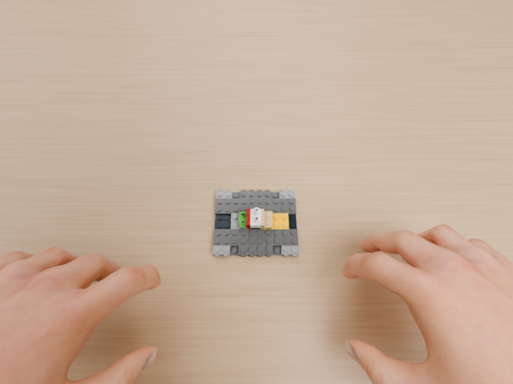
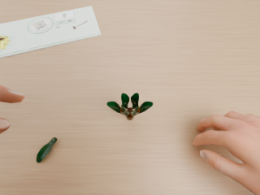
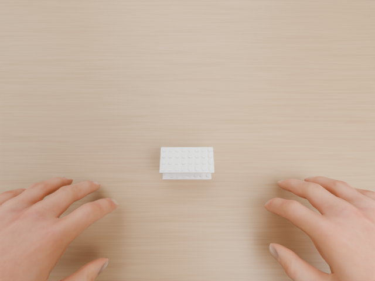
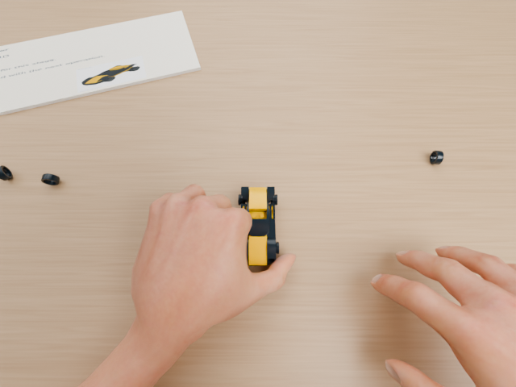
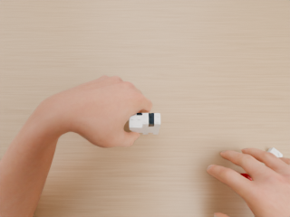
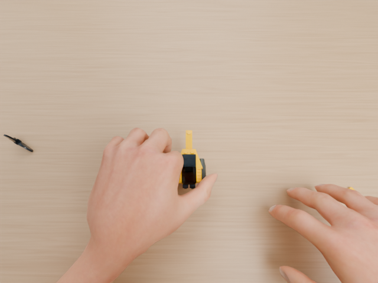
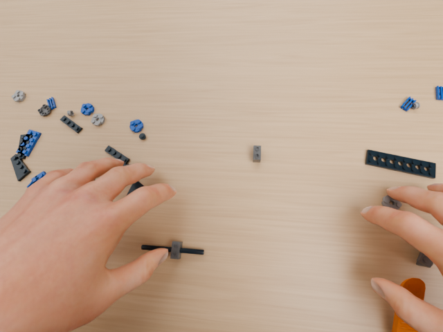
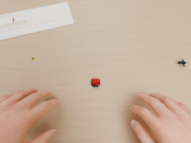
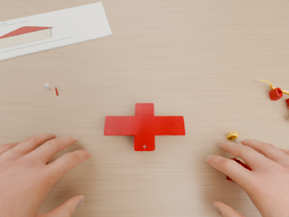

Scenario recordings and outcomes covers real-set examples, synthetic fixtures and the gallery. Each entry links to its original request and distinguishes original footage from separately recorded variants, diagnostics and prefixes.
Shared-pipeline evaluation. The generalization gallery reports its own case and action-probe counts, including failed and unexecuted probes. Its split records disclose prior exposure.
1 Models2 Build videos3 How it works4 Actions
5 Failure codes6 Mistakes7 Scene8 Outputs9 Validation10 Limits
1. Models we simulate
The primary registry includes 51 set examples and 10 gallery cases across 9 identified LEGO sets. Each thumbnail shows the final recorded frame of one original episode. The LEGO 10348 recording ends after manual step 5.

10348-1/manual_prefix_05
10348-11 input · 1 original video

03 · Dracaena: orientation and extra copies
10349-17 inputs · 6 original videos

1211-2/scenario_misgrasp
1211-218 inputs · 10 original videos

30036-1/scenario_copy_count
30036-15 inputs · 4 original videos

10 · Ghost: unsuccessful repair and missing part
40013-121 inputs · 20 original videos

4348-1/scenario_missing_tool
4348-16 inputs · 4 original videos

8028-1/separator_axle_push
8028-11 input · 1 original video

08 · Space Speeder: incorrect instruction
8400-11 input · 1 original video

09 · Aeroplane: wrong instruction source
3625-11 input · 1 original video
2. Current build and recovery videos
20 selected episodes cover construction, handling and recovery in the existing video-card format. The scope of each fixture or checkpoint excerpt is stated below. A scenario can resolve while the full configured task remains incomplete.
Selection and source bindings · All current runs
Construction and subassemblies Support, reorientation and part handling Mistakes, retries and recovery Instruction help and blocked access
Hand and object measurements for the featured real-set recordings
Construction and subassemblies
Rest a partial build on an oblique face, then continue
Build two connected slopes in hand, release the incomplete component at a stable 45-degree pose, brace it, and add the remaining plate along its tilted connector axis.
Three-part fixture generated through public Sim actions and the resting-placement planner. Initial acquisition, incomplete resting, continued construction and final release are all visible.
Execution: completed · configured task complete: True. Scenario: not_requested.
No scenario selected
engine: passed · replay: passed · motion: visual_review_required · contact: failed · render: completed · visual review: issues_observed.
Recorded actions: pick, hold_model, place, reorient_model, set_down_model, pause, brace_model, mate, release_brace.
Input · Recorded results · Runnable input and assets · Visual review · Episode download
19.10 s · 191 frames · 10 fps · current head-camera recording.
Start from a picked base and build in hand
Keep the original left-hand grasp on the picked base while the right hand adds a second brick and a plate, then reorient the complete component and set it down sideways.
Three-part fixture with no table-construction prefix or hidden initial acquisition. Engine, intended support, motion and rendered contact are evaluated separately.
Execution: completed · configured task complete: True. Scenario: not_requested.
No scenario selected
engine: passed · replay: passed · motion: visual_review_required · contact: failed · render: completed · visual review: issues_observed.
Recorded actions: pick, hold_model, mate, reorient_model, set_down_model, pause.
Input · Recorded results · Runnable input and assets · Visual review · Episode download
15.90 s · 159 frames · 10 fps · current head-camera recording.
Manual prefix: steps 1–5, 18 of 473 parts
An instruction-linked construction sequence from LEGO 10348.
Only the first five manual steps are represented; this is not a complete set build.
Execution: completed · configured task complete: True. Scenario: not_requested.
No scenario selected
engine: passed · replay: passed · motion: not_certified · contact: failed · render: completed · visual review: issues_observed.
Recorded actions: pick, place, brace_model, release_brace, hold_model, attach, set_down_model.
Input · Recorded results · Runnable input and assets · Visual review · Episode download
110.30 s · 1103 frames · 10 fps · current head-camera recording.
Interleaved copies, continued growth and installation
Build children of copies A and B, partially join both copies, add caps to the joined modules, then install them.
Nine-part construction fixture demonstrating the shared scheduling and subassembly API.
Execution: completed · configured task complete: True. Scenario: not_requested.
No scenario selected
engine: passed · replay: passed · motion: not_certified · contact: failed · render: completed · visual review: issues_observed.
Recorded actions: pick, place, attach.
Input · Recorded results · Runnable input and assets · Visual review · Episode download
47.40 s · 474 frames · 10 fps · current head-camera recording.
Attach a module while holding the host
One hand lifts and holds the host while the other attaches a prepared module, followed by setting down the combined assembly.
Three-brick fixture; module construction precedes the visible checkpoint. Render window: start_after=module_cap.
Execution: completed · configured task complete: True. Scenario: not_requested.
No scenario selected
engine: passed · replay: passed · motion: visual_review_required · contact: failed · render: completed · visual review: issues_observed.
Recorded actions: hold_model, attach, set_down_model.
Input · Recorded results · Runnable input and assets · Visual review · Episode download
9.60 s · 96 frames · 10 fps · current head-camera recording.
Support, reorientation and part handling
Sideways bracing, insertion and pressing
Turn the build, maintain a table brace, attach and press a part, then release the brace.
Authored fixture for persistent support and pressing along the connection direction.
Execution: completed · configured task complete: True. Scenario: not_requested.
No scenario selected
engine: passed · replay: passed · motion: not_certified · contact: failed · render: completed · visual review: issues_observed.
Recorded actions: pick, place, turn_build, brace_model, mate, press, pause, release_brace.
Input · Recorded results · Runnable input and assets · Visual review · Episode download
16.55 s · 331 frames · 20 fps · current head-camera recording.
Lift, tilt and set down a small brick
Lift a red brick, reorient it in two stages, and set it down in its new orientation.
Single-brick orientation probe; this recording does not demonstrate multi-part rigidity. Endpoint support and rendered hand contact are separate checks.
Execution: completed · configured task complete: True. Scenario: not_requested.
No scenario selected
engine: passed · replay: passed · motion: not_certified · contact: failed · render: completed · visual review: issues_observed.
Recorded actions: pick, place, hold_model, reorient_model, set_down_model.
Input · Recorded results · Runnable input and assets · Visual review · Episode download
13.30 s · 133 frames · 10 fps · current head-camera recording.
Regrasp, inspect and transfer
Acquire a part, change the grasp, inspect it, and transfer it to the other hand.
Handling probe ending before final assembly; task completion is not its acceptance criterion.
Execution: completed · configured task complete: False. Scenario: not_requested.
No scenario selected
engine: passed · replay: passed · motion: not_certified · contact: failed · render: completed · visual review: issues_observed.
Recorded actions: pick, regrasp, inspect, transfer.
Input · Recorded results · Runnable input and assets · Visual review · Episode download
16.60 s · 166 frames · 10 fps · current head-camera recording.
Clear clutter while holding a brick
Keep a red brick in one hand while the other sweeps a loose part aside, then set the held brick down.
Authored pile-clearing probe ending before final assembly; it does not demonstrate autonomous recognition of hidden parts.
Execution: completed · configured task complete: False. Scenario: not_requested.
No scenario selected
engine: passed · replay: passed · motion: not_certified · contact: failed · render: completed · visual review: issues_observed.
Recorded actions: pick, place, hold_model, sweep_part, set_down_model.
Input · Recorded results · Runnable input and assets · Visual review · Episode download
17.80 s · 178 frames · 10 fps · current head-camera recording.
Build and articulate a connected branch
Brace the host, attach a branch, move it about its connection, and release support.
Round-bearing articulation fixture with the connection preserved.
Execution: completed · configured task complete: True. Scenario: not_requested.
No scenario selected
engine: passed · replay: passed · motion: not_certified · contact: failed · render: completed · visual review: issues_observed.
Recorded actions: pick, place, brace_model, mate, articulate_connection, pause, release_brace.
Input · Recorded results · Runnable input and assets · Visual review · Episode download
16.90 s · 338 frames · 20 fps · current head-camera recording.
Mistakes, retries and recovery
Miss a grasp, retry and place — 1211
Close beside the target without acquiring it, reopen, then retry the pick and complete the placement.
Scripted non-acquiring grasp and explicit retry; engine recovery does not certify the rendered finger contact. Render window: start_after=a037, stop_after=a039.
Execution: completed · configured task complete: True. Scenario: resolved.
Target reacquired through a later successful engine pick; rendered acquisition is evaluated separately
engine: passed · replay: passed · motion: not_certified · contact: failed · render: completed · visual review: issues_observed.
Recorded actions: attempt_grasp, pick, place.
Input · Recorded results · Runnable input and assets · Visual review · Episode download
7.50 s · 90 frames · 12 fps · current head-camera recording.
Detach and reseat a part — 40013
Remove a connected part, pause, then return it to its required position.
Scripted detachment and reseating; the recording does not simulate an accidental impact. Render window: start_after=a035_support_release.
Execution: completed · configured task complete: True. Scenario: resolved.
Recovery verified in the engine; review the rendered motion
engine: passed · replay: passed · motion: not_certified · contact: failed · render: completed · visual review: issues_observed.
Recorded actions: remove, pause, place.
Input · Recorded results · Runnable input and assets · Visual review · Episode download
6.33 s · 76 frames · 12 fps · current head-camera recording.
Notice and correct a placement mistake
Make an incorrect placement, notice it, remove and replace the part, then continue construction.
Small authored recovery fixture; the notice action is scripted, not a measured cognitive process.
Execution: completed · configured task complete: True. Scenario: resolved.
Recovery verified in the engine; review the rendered motion
engine: passed · replay: passed · motion: not_certified · contact: failed · render: completed · visual review: reviewed_with_limitations.
Recorded actions: pick, place, mate, notice, remove.
Input · Recorded results · Runnable input and assets · Visual review · Episode download
17.43 s · 523 frames · 30 fps · current head-camera recording.
Request guidance and repair — 40013
A help-request sequence includes noticing, pointing, removal and replacement.
Recovery-scenario outcome is separate from overall build completion; communication is authored. Render window: start_after=a029. The initial model hold was acquired before this visible window.
Execution: completed · configured task complete: False. Scenario: resolved.
Configured scenario completed without introducing a task or procedure error; cognition is unevaluated
engine: passed · replay: passed · motion: not_certified · contact: failed · render: completed · visual review: issues_observed.
Recorded actions: pick, set_down_model, mate, notice, point, remove, place, pause.
Input · Recorded results · Runnable input and assets · Visual review · Episode download
14.75 s · 177 frames · 12 fps · current head-camera recording.
Orientation and repeated-copy corrections — 10349
Correct an upside-down leaf, work through repeated modules, and remove extra copies. Gallery case 3 includes the timed dialogue.
Selected Dracaena construction excerpt with authored instruction context; it does not complete the entire set or verify official manual order. Render window: start_after=a023, stop_after=a035. The initial model hold was acquired before this visible window.
Execution: completed · configured task complete: False. Scenario: resolved.
Sequential scenario outcomes are recorded separately
engine: passed · replay: passed · motion: visual_review_required · contact: failed · render: completed · visual review: issues_observed.
Recorded actions: pick, mate, pause, notice, remove, place, point, attach, set_down_model, put_down.
Input · Recorded results · Runnable input and assets · Visual review · Training download · Episode gallery and timed dialogue
53.58 s · 643 frames · 12 fps · current head-camera recording.
An attempted repair that remains wrong — 40013
Remove a wrongly placed part, attempt another placement, and stop with the task error still present.
Intentionally unresolved recovery. A completed execution and video are not a successful repair. Render window: start_after=a029. The initial model hold was acquired before this visible window.
Execution: completed · configured task complete: False. Scenario: unresolved.
Task/procedure error remains; no successful recovery established
engine: passed · replay: passed · motion: not_certified · contact: failed · render: completed · visual review: issues_observed.
Recorded actions: pick, set_down_model, mate, remove, pause.
Input · Recorded results · Runnable input and assets · Visual review · Episode download
11.75 s · 141 frames · 12 fps · current head-camera recording.
Inspect and reseat an offset part
Watch the approach, local correction and check after release.
The evaluator checks the attachment against its task pose. Render window: start_after=a029, stop_after=a031. The initial model hold was acquired before this visible window.
Execution: completed · configured task complete: False. Scenario: resolved.
Recovery verified in the engine; review the rendered motion
engine: passed · replay: passed · motion: not_certified · contact: failed · render: completed · visual review: issues_observed.
Recorded actions: pick, mate, notice, remove, place.
Input · Recorded results · Runnable input and assets · Visual review · Episode download
10.42 s · 125 frames · 12 fps · current head-camera recording.
Instruction help and blocked access
Consult the diagram and locate the next part
Follow the change of attention from the supplied instruction page to the next green part.
The guidance cue and subsequent pickup identify the same part. Attention and help are scripted. Render window: start_after=a025, stop_after=a027. The initial model hold was acquired before this visible window.
Execution: completed · configured task complete: False. Scenario: resolved.
Configured scenario completed without introducing a task or procedure error; cognition is unevaluated
engine: passed · replay: passed · motion: not_certified · contact: failed · render: completed · visual review: issues_observed.
Recorded actions: look_at, point, pick, place.
Input · Recorded results · Runnable input and assets · Visual review · Episode download
8.67 s · 104 frames · 12 fps · current head-camera recording.
Inspect the obstruction before an unsuccessful removal
Follow the approach to the connected parts above the removal target and the withdrawal.
The removal is refused. The inspection leaves the connections intact. Render window: start_after=a035_support_release.
Execution: completed · configured task complete: True. Scenario: blocked.
The release path of p005 is obstructed by p006, p007
engine: passed · replay: passed · motion: not_certified · contact: failed · render: completed · visual review: issues_observed.
Recorded actions: inspect, pause.
Input · Recorded results · Runnable input and assets · Visual review · Episode download
4.67 s · 56 frames · 12 fps · current head-camera recording.
3. How it works
Current API workflow and construction controls
Both Python callers and JSON episodes use Sim. Requests produce an action journal, engine feedback and task progress. Offline motion generation adds trajectories and intended hand contacts; fitting produces evaluated hand poses; rendering writes the head-camera images and labels. The shared exporter derives timed dialogue and causal training samples from that run.
Canonical goal coordinates are separate from committed assembly and subassembly transforms. Construction recipes can interleave any number of distinct copies and nested modules. Built and installed progress are separate; changing a rigid pose does not erase an incorrect connection or misplaced part. Stable placement, connector access and hand ownership can each refuse an action. Support-checked construction and settling have narrower guarantees than a general force simulation; legacy canonical state and authored loose-part put-down retain their documented scopes.
Sim.plan_resting_placement(pid, rotation=..., center_xz=...) proposes ordinary public actions for the actual connected component, including incomplete builds. The requested rotation is relative to the current world pose; center_xz sets the horizontal mean of part centers in LDU. An explicit unstable rotation is refused; omitting it enables a bounded deterministic search over mesh support faces. The plan preserves relative part geometry and canonical goals, and reports endpoint support separately from motion and hand feasibility. Large components can use the existing bimanual turn when its preconditions hold; unsupported relocation strategies remain explicit.
In coherent mode, pick(pid, hand="L") followed by hold_model(pid, hand="L", M=...) can retain the acquired root grasp and start construction in the hand. M is a rigid world displacement, and subsequent placements and connector mating use the held component’s committed frame. There is no required table-construction prefix. Explicit model set-down checks the resulting component’s full-mesh support polygon under the declared mass proxy. Only one persistent model hold is supported at a time; a second separate hold_model is refused. A legacy hold without M retains its presentation-only semantics.
Python API · Construction recipes · Support and clutter controls · Reproduction commands
| Capability / input | Scope | Current result |
|---|
| Interleaved and nested copies | Separate part and instance IDs; partial joins and growth after joining. | Engine: passed; motion: not_certified; render: completed · Evidence |
| Table stabilization | Explicit brace ownership retained across actions and checkpoints. | Engine: passed; motion: not_certified; render: completed · Evidence |
| Regrasp and support exchange | The helper supports before the owner releases and acquires a different region. | Engine: passed; motion: not_certified; render: completed · Evidence |
| Stable poses of partial and complete components | Two connected slopes rest on an oblique support face while the third target is unbuilt; a table brace supports continued construction in that pose. | Engine: passed; motion: visual_review_required; render: completed · Evidence |
| Construction in the supporting hand | Keep the picked root in the same hand, add parts to its committed connector frame, then release the connected model at a checked sideways pose. | Engine: passed; motion: visual_review_required; render: completed · Evidence |
| Settled loose parts | Seeded mixed orientations and stacking; settling and support checks are distinct from human grasp feasibility. | Engine: passed; motion: not_certified; render: completed · Evidence |
| Clearing clutter while holding | The free hand can move an obstructing part. Searching is authored; no visual detector is implied. | Engine: passed; motion: not_certified; render: completed · Evidence |
| Connected articulation | Move an allowed connected branch through its connector-defined degrees of freedom. | Engine: passed; motion: not_certified; render: completed · Evidence |
| Manual construction prefix | LEGO 10348 steps 1–5: 18 of 473 parts. This is not the complete booklet. | Engine: passed; motion: not_certified; render: completed · Evidence |
Illustrated construction steps · How the front rail joins the pot
Explicit actions, refusals and recovery remain in the journal. A completed video does not establish that every named scenario was demonstrated; see the scenario outcomes below. Motion proposals and geometric contact diagnostics do not establish continuous physical feasibility or downstream transfer.
Runtime identity · Input/model identities · Runtime source download · Report producer identity · Report producer download
Recorded action coverage
Counts cover the primary episodes and supplemental action examples. Attempts include recorded refusals and preparation outside the render window. Frame counts use action labels from those runs with complete videos. The scenario companions and separate refusal demonstrations have their own coverage.
34 of 34 verbs attempted; 33 represented by rendered frame labels. Per-episode measurements and refusal codes.
4. Action reference
All 34 public verbs have their own card. 33 have clips bound to recorded action frames. There are 1 separate refusal diagnostics. Unsupported paths keep their exact failure records. Phase labels describe the generated motion; they do not prove contact. Engine, motion, contact and appearance are independent.
Card failure codes describe engine refusals. Invalid API parameters and later motion-generation failures are reported separately.
7 supplemental public-JSON examples add 5 complete recordings. Their results are separate from the primary 114-case campaign. The action clips are excerpts of these and the primary recordings, not extra independent episodes.
Action-media manifest · Supplemental inputs · Supplemental audit · Signed action phase reviews
pickManipulation
pick(pid, hand='R')
Parameters
pid | required; string |
hand | 'R'; string; choices L, R |
Precondition (all must hold)
- the part exists
- the part lies loose on the table (also after it fell there) or rests on the build without clicking in
- that hand is empty
Effect
The part is in the hand.
Failure codes
- NO_SUCH_PART
- NOT_FREE
- HAND_BUSY
Recorded motion phase labels
reach for Brick 2 x 4 → grasp
Visual review of these six frames
Issues observed. Source frames 1, 4, 7, 11, 14, 17.
- The red brick is isolated against the table at frames 1 and 4. The right hand approaches from the side at 7, and by 11 the curled fingers hide the brick almost entirely.
- The red silhouette reappears between the fingers at 14 and 17 during the following lift. The steep bend where the right forearm meets the hand is conspicuous at 11–14. The grasp closure and finger-pad contact are obscured.
attempt_graspManipulation attempt (clean miss)
attempt_grasp(pid, hand='R', clearance_ldu=30.0)
Parameters
pid | required; string |
hand | 'R'; string; choices L, R |
clearance_ldu | 30.0; number; LDU; Nominal empty-pinch clearance beyond the target mesh bounds; actual skin is evaluated separately. |
Precondition (all must hold)
- the part exists and is loose on the table or resting unconnected on the build
- the selected hand is empty
- the offset is finite and within the allowed range
Effect
Record a clean missed pinch of a loose part, without acquiring it.
This deliberately scheduled execution failure closes in empty space on
the chosen hand's side and above the transformed mesh bounds. Clearance
describes the nominal pinch point in LDU, not measured skin clearance.
Actual hand motion, closure and noncontact require renderer evidence.
No retry, object displacement, force or loss of an established grasp is
implied. A successful retry is a separate pick action.
Failure codes
- NO_SUCH_PART
- NOT_FREE
- HAND_BUSY
- GEOMETRY_UNAVAILABLE
Recorded motion phase labels
Try to pinch the part, but close on empty space beside it: approach → Try to pinch the part, but close on empty space beside it: close empty → Try to pinch the part, but close on empty space beside it: lift empty → Try to pinch the part, but close on empty space beside it: reopen → Try to pinch the part, but close on empty space beside it: withdraw
Visual review of these six frames
Reviewed with limitations. Source frames 1, 8, 15, 21, 28, 35.
- The white rectangular plate stays on the table while the right thumb and index close just beyond its edge at frame 15. At frame 21 the closed fingers have lifted beside it. The empty hand opens and returns toward the plate by frame 35.
- The visible tabletop between the missed pinch and the plate makes this failed acquisition readable even though the held-host assembly is partly out of view.
attempt_directionScripted manipulation attempt
attempt_direction(pid, T, direction)
Parameters
pid | required; string |
T | required; array; shape [4, 4]; LDU |
direction | required; array; shape [3]; direction |
Precondition (all must hold)
- the brick is held
- the target pose has a real connection
- the approach is incompatible with the joint axis
Effect
Script an incompatible approach to a real joint, without attaching.
The direction is compared with the intended joint axis. This records a
kinematic attempt, not a force or collision simulation.
Failure codes
Recorded motion phase labels
approach wrong side → attempt sideways → back away → reset
Visual review of these six frames
Issues observed. Source frames 12, 18, 24, 31, 37, 43.
- The small red host is visible to the left at frame 12. The right hand closes around the yellow plate, moves it across the image and returns near the orange tool at frame 37. The yellow piece is still in the hand at the next lift.
- At the sampled sideways approach and withdrawal, frames 24 and 31, the fingers hide most of the yellow piece and the red receiving face is outside the crop. The return is visible; the attempted side and the reason it fails are difficult to infer from the strip.
release_partScripted handling failure
release_part(pid, T, kind='drop')
Parameters
pid | required; string |
T | required; array; shape [4, 4]; LDU |
kind | 'drop'; string; choices slip, drop |
Precondition (all must hold)
- the brick is held
- the landing transform is finite and homogeneous
- in coherent state the endpoint has stable full-mesh table support and clears static obstacle body bounds
Effect
Lose a held part to an authored landing pose (scripted slip or drop).
The renderer animates grasp loss and falling. No impact/force dynamics
are inferred from the authored endpoint. Coherent state requires the
full mesh to have stable table support and a clear endpoint. Landing
on loose parts or a build needs settling dynamics and is not inferred.
Failure codes
- NOT_HELD
- UNSTABLE_LANDING
- LANDING_COLLISION
Recorded motion phase labels
carry → release → fall → landed → release → withdraw
Visual review of these six frames
Issues observed. Source frames 12, 18, 25, 31, 38, 44.
- The yellow piece is visible beside the right fingers at 25, disappears behind the moving hand, then is visible on the table at 44. The intervening samples conceal the fall and make the moment of landing hard to see.
mateManipulation (connector level)
mate(pid, using, onto, at, turn=0.0, slide=None, seat=1.0, flip=1, residual=None, within=None, in_hand=False, schema=None)
Parameters
pid | required; string |
using | required; Connector index or [face, column, row] grid address. |
onto | required; string |
at | required; Connector index or [face, column, row] grid address. |
turn | 0.0; number |
slide | None; number |
seat | 1.0; number |
flip | 1; number |
residual | None; array; shape [4, 4]; LDU |
within | None; array |
in_hand | False; boolean |
schema | None; The JSON interface uses the default connector schema (null). |
Precondition (all must hold)
- the part is held
- q is built
- connector types are compatible (male–female, same profile class)
- a short connector (a stud) is not already taken
- no interpenetration at the solved pose
- the way in is clear: pushed along the joint axis from a stud height out, it hits nothing that is not already touching it (stud-length joints; exact reference poses are exempt from this engine check, so the rendered approach needs a separate mesh-path review)
Effect
Put connector `using` of the held part into connector `at` of the built part `onto`, turned by `turn` degrees
about the axis, `slide` LDU along the axis (default: from `seat`; 0 = fully seated, positive = backed off), `flip` = axis sense, plus an
optional small `residual` 4x4 (misalignment, in the target connector's frame). The pose is solved from the two
connector frames. Outcome: mated (all engagements at that pose recorded) if it engages, possibly after
self-aligning within the capture tolerance; if it doesn't engage, resting on the build (on the connector tips)
when that is on top, or fell (onto the table) when it would hang under or beside the build; rejected only for
interpenetration or a broken precondition.
in_hand: the target model is held in the other hand (motion/labels only; the state is the same).
Failure codes
- NOT_HELD
- TARGET_NOT_BUILT
- INCOMPATIBLE
- OCCUPIED
- COLLISION
- APPROACH_BLOCKED
- NO_SUCH_CONNECTOR
Recorded motion phase labels
lift → carry → align → press on → release → retract
Visual review of these six frames
Reviewed with limitations. Source frames 180, 192, 204, 215, 227, 239.
- At frame 192 the right thumb and fingers carry the yellow brick while red remains visible at the left fingertips. Both colors are still distinguishable as the hands converge at 204.
- At 215 the right hand masks the joining edge. By 227 it has opened away, and the red and yellow pieces remain alongside each other within the left fingers. The change reads as a bimanual join. These views cannot resolve the connector or the depth of the contact.
placePose level (fallback)
place(pid, T, seat=1.0, start=False, within=None)
Parameters
pid | required; string |
T | required; array; shape [4, 4]; LDU |
seat | 1.0; number |
start | False; boolean |
within | None; array |
Precondition (all must hold)
- the part is held
- at the pose it engages the model (connectors, or a trusted link from the official model) unless start
- no interpenetration
Effect
Put a held part at pose T (its fully seated pose). seat<1 leaves it short of the seated pose along the
connection axis. start=True starts a new assembly on the table (no connection needed).
Failure codes
- NOT_HELD
- NO_CONNECTION
- COLLISION
Recorded motion phase labels
lift → carry → align → press on → release → retract
Visual review of these six frames
Reviewed with limitations. Source frames 12, 19, 27, 34, 42, 49.
- The white host is clear to the left at frame 12. At 19 a red edge remains visible between the right fingers as they bring the brick toward the host. The left hand stays away from the joining area at 27 and 34.
- The back of the right hand covers most of the placement at 34. At 42 and 49 the hand has opened away and the red brick is visibly on the white host. The endpoints communicate placement more clearly than the seating motion.
pressManipulation
press(pid)
Parameters
Precondition (all must hold)
- the part is built in
- at least one of its connections is not fully seated
- a hand is free
Effect
The part advances along the current connector insertion axis, including horizontal or inverted joints. A compatible official pose can inform the seating depth; lateral and angular mistakes are retained. Connections are recomputed and coherent support is checked before committing. This is a kinematic seating action, not a force measurement.
Failure codes
- NOT_ATTACHED
- FULLY_SEATED
- NO_FREE_HAND
- UNSTABLE_PLACEMENT
Recorded motion phase labels
reach along the press axis → fingertip contacts the part → press along the connector axis → open before withdrawal → retract the released hands
Visual review of these six frames
Issues observed. Source frames 224, 235, 246, 258, 269, 280.
- At 235 the left fingers continue to steady the red-and-yellow assembly. At 246 the right fingertip approaches its yellow side. The right hand opens away by 258 and is well clear at 269 while the left keeps the same hold.
- The coordinated approach and release are legible, but the yellow piece moves very little in the sampled images. The exact touch point and a distinct press are hard to identify. No applied force can be read from the strip.
removeManipulation
remove(pid, hand='R')
Parameters
pid | required; string |
hand | 'R'; string; choices L, R |
Precondition (all must hold)
- the part is built in (or rests on the build: then it is simply taken)
- that hand is empty
- it can come off: one direction frees every joint (a stud or pin joint only along its out-direction; a part on a bar or axle longer than its hole slides either way, the free tip first; two opposed joints with one partner let go away from it), and pulled clear along it, it hits no part placed after it
Effect
Its connections are deleted and the part is in the hand.
Failure codes
- NOT_ATTACHED
- HAND_BUSY
- BLOCKED
- NO_GRIP (fingers can't get at two opposite sides, or a thin plate sits flush: use pry)
Recorded motion phase labels
reach for Brick 2 x 2 → grasp → pull off → lift clear
Visual review of these six frames
Issues observed. Source frames 223, 238, 253, 267, 282, 297.
- The yellow piece sits on the red host at frames 223 and 238. The right hand reaches it at 253 and rises with yellow visible by 282. The palm hides the connection during extraction and obscures the condition of the host.
put_downManipulation
put_down(pid, T)
Parameters
pid | required; string |
T | required; array; shape [4, 4]; LDU |
Precondition (all must hold)
Effect
Write the supplied loose-part pose, mark the part as on the table and free its hand. This authored endpoint does not check table support or collisions. For a connected built component, use plan_resting_placement and the proposed public actions, or an explicitly posed set_down_model, for checked resting support. Motion generation and rendered hand contact require separate checks.
Failure codes
Recorded motion phase labels
lift → carry → place → release → withdraw
Visual review of these six frames
Issues observed. Source frames 544, 552, 560, 568, 576, 584.
- The hands overlap in the foreground at 544 and 552. By 560 the plant is clearly visible at center and the right thumb and finger carry a small dark piece toward the right edge.
- At 568 a tiny dark spot is visible on the tabletop beside the loose green element while the right fingers hover above it. The wrist is held at a sharp bend at 568–576. The small size and overlapping fingers obscure the specific instant of release.
attachAssembly
attach(pids, M, hand=None)
Parameters
pids | required; array |
M | required; array; shape [4, 4]; LDU |
hand | None; string; choices L, R; Null requires both hands free; L/R acquires a module or retains its explicitly posed held module. The other hand may support the host. |
Precondition (all must hold)
- acquiring hands are free, or the named hand already explicitly holds the incoming component
- the parts form exactly one separate built sub-assembly
- a table acquisition has independent stable support; held incoming or host components have explicit committed world poses
- after the move, at least one connection engages the model
- after the move, nothing collides and released components remain supported
Effect
Pick up a finished sub-assembly (both hands) and move it by the rigid transform M onto the build.
Precondition: the parts form one separate assembly on the table, both hands free, and after the move it
engages >=1 connection with the rest and collides with nothing. Effect: poses moved, connections added.
Optional hand selects a one-hand, size-bounded acquisition or retains that hand's explicitly posed
incoming module. A held incoming module is released only after its joined component is table-stable.
The other hand may retain an explicitly held host or table brace. Default behavior requires both hands free. Motion/contact
feasibility and grip forces are independent of endpoint acceptance.
Failure codes
- HANDS_BUSY
- HAND_BUSY
- NOT_ONE_SUBASSEMBLY
- NO_CONNECTION
- COLLISION
- MODEL_HELD
- MODEL_BRACED
- EXPLICIT_MODEL_POSE_REQUIRED
- TOO_BIG
- UNSTABLE_PLACEMENT
Recorded motion phase labels
reach → take hold → lift → carry → place → release → withdraw
Visual review of these six frames
Reviewed with limitations. Source frames 25, 32, 40, 47, 55, 62.
- The left thumb and fingers retain the blue host while the right hand lifts the yellow piece at frame 40, carries it over the blue one at frame 47 and withdraws by frame 62. The yellow-on-blue result is visible between the left fingertips.
- The right hand obscures the receiving studs at the moment of joining. The first sampled caption says set down for the preceding model lift, although the left hand continues to hold the host.
detachAssembly
detach(pids, M)
Parameters
pids | required; array |
M | required; array; shape [4, 4]; LDU |
Precondition (all must hold)
- both hands are free
- the parts are built in and connected to each other
- the section is joined to the rest of the model
- one direction frees every joint between the section and the rest (the remove rule, for the section as a whole)
- where it is set down, nothing collides
Effect
Take a section (the given connected parts) off the build with both hands and set it down by the rigid
transform M (attach in reverse). Precondition: both hands free; the parts are built and connected among
themselves; every joint between the section and the rest lets go in one common direction (as remove); the
section collides with nothing where it is set down. Effect: those joints are deleted; the section is a separate
assembly; parts resting on it go with it.
Failure codes
- HANDS_BUSY
- NOT_ATTACHED
- NOT_ONE_SUBASSEMBLY
- BLOCKED
- COLLISION
Recorded motion phase labels
reach → take hold → reach → take hold → lift → carry → place → release → withdraw
Visual review of these six frames
Reviewed with limitations. Source frames 204, 215, 225, 236, 246, 257.
- At frame 204 the red cluster is still above the white model. Both hands close over it by frame 225 and partly hide the joint. By frame 246 the white and dark-striped model is exposed behind the hands and the red piece is ready to set down.
- At frame 257 the red piece and remaining model lie apart. That visible change is clear even though the release of the particular studs is concealed.
turn_buildAssembly
turn_build(pid, yaw=0.0, flip=False, pitch=0.0, roll=0.0)
Parameters
pid | required; string |
yaw | 0.0; number |
flip | False; boolean |
pitch | 0.0; number |
roll | 0.0; number |
Precondition (all must hold)
- both hands are free
- the part is built in
- once turned, the model hits no other part on the table
- full-mesh contact polygon supports the bound-volume mass-center proxy; tilting loose riders is refused
Effect
Turn a separate model and return it to a supported table pose.
Angles are degrees: yaw about -y, pitch about x, roll about z, then
optional 180-degree x flip. Both hands must be free. Connected geometry
moves rigidly and requires a stable contact polygon before release.
Loose riders may accompany yaw; tilt/flip needs independent settling.
Failure codes
- HANDS_BUSY
- NOT_ATTACHED
- COLLISION
- UNSTABLE_PLACEMENT
Recorded motion phase labels
approach the grasp regions → take hold with both hands → lift clear → carry and orient → set down → hold the final pose → release both hands → withdraw both hands
Visual review of these six frames
Issues observed. Source frames 64, 82, 100, 119, 137, 155.
- Both hands approach opposite ends of the long red piece at frame 82 and lift it at 100. The fingers cover both ends as it turns at 119–137. When the hands withdraw at 155 the short red edge faces the camera; the nearby yellow piece is visible apart from it. The overlap prevents inspection of the contact during the turn.
transferManipulation
transfer(from_hand='R')
Parameters
from_hand | 'R'; string; choices L, R |
Precondition (all must hold)
- that hand holds a part or connected model (tools are unsupported)
- the other hand is empty
Effect
Pass a held part or connected model to the free hand.
Model geometry and connections stay fixed; explicit world-pose model
ownership follows the receiving hand. Motion must acquire the receiver
before releasing the donor. Tools are not supported.
Failure codes
Recorded motion phase labels
lift clear → carry and orient → set down → prepares a new contact region → receiving hand approaches → receiving hand acquires → both hands support → donor opens → donor clears the object → donor withdraws
Visual review of these six frames
Reviewed with limitations. Source frames 111, 119, 128, 136, 145, 153.
- The red brick is visible in the right-hand pinch at frames 111–128. The left hand reaches its exposed end at 136. By 145 the right digits have cleared the studs, and the left hand alone holds the brick through 153. The fingers overlap briefly at the exchange.
regraspSupported manipulation
regrasp(pid, hand='R', grip_point=None)
Parameters
pid | required; string |
hand | 'R'; string; choices L, R |
grip_point | None; array; shape [3]; LDU; Preferred surface region in pid-local LDraw coordinates; motion may refuse. |
Precondition (all must hold)
- the named hand holds the part/model
- the other hand is free
Effect
Change a held object's grasp with temporary support from the free hand.
The named hand retains ownership after opening and reacquiring. For a
model, pid selects the member to grasp. grip_point optionally prefers a
surface region in that member's local LDraw coordinates (LDU). The
bounded motion planner must find separated exposed contacts; acceptance
here does not certify anatomy, forces, or even motion feasibility.
Failure codes
- NOT_HELD
- HANDS_BUSY
- INVALID_PARAMETERS
Recorded motion phase labels
lift clear → carry and orient → set down → prepares a new contact region → receiving hand approaches → receiving hand acquires → both hands support → donor opens → donor clears the object → prepares a new contact region → receiving hand approaches → receiving hand acquires → both hands support → donor opens → donor clears the object → donor withdraws
Visual review of these six frames
Issues observed. Source frames 10, 22, 34, 47, 59, 71.
- The brick projects beyond the right pinch at frame 22. The left hand arrives to support it and is open again by 59. At 47 the nearer right fingers cover nearly the entire brick, making the change of grip hard to follow at that instant.
hold_modelAssembly
hold_model(pid, hand='L', M=None)
Parameters
pid | required; string |
hand | 'L'; string; choices L, R |
M | None; array; shape [4, 4]; LDU |
Precondition (all must hold)
- the hand is free for an existing built component, or already holds the selected loose root
- adopting a picked root requires coherent state and an explicit M
- no model is held already
- the model fits in one hand (at most 16 cm across)
Effect
Pick the model containing `pid` up in one hand, to build on it in the air (the other hand brings parts).
Precondition: that hand is free, the part is built in, the model is one separate piece small enough for one hand.
In coherent state, an explicitly posed hold may instead adopt a loose root already picked in that same hand.
This starts a receiving assembly without a preliminary table placement and retains the existing grasp.
Effect: the hand is occupied by the model; actions needing both hands are refused until set_down_model.
attach(..., hand=holding_hand) can join and release an explicitly posed incoming module.
With M, apply a rigid world displacement in LDU and commit the lifted poses;
subsequent reorient_model and mates use those actual endpoints. Without M, preserve the historical
presentation-only lift. Neither endpoint mode certifies human contact or continuous motion.
Failure codes
- HAND_BUSY
- HANDS_BUSY
- NOT_ATTACHED
- TOO_BIG
- MODEL_POSE_BLOCKED
- EXPLICIT_MODEL_POSE_REQUIRED
- NOT_HELD
Recorded motion phase labels
lifts the acquired root to build in hand: lift clear → lifts the acquired root to build in hand: carry and orient → lifts the acquired root to build in hand: set down · The recorded “set down” phase ends the move into a held pose. The support hand keeps the model. A later set_down_model action records its release onto the table.
Visual review of these six frames
Issues observed. Source frames 11, 15, 20, 24, 29, 33.
- The left hand closes on the blue brick by frame 15 and keeps it at the thumb through frame 33. The red and yellow loose pieces stay on the table as the right hand starts reaching. The top-down view gives few depth cues for the lift.
- The action caption at frame 29 says set down. The left hand still retains the blue root into the next pickup, so that generic phase caption is misleading here.
reorient_modelAssembly
reorient_model(pid, M)
Parameters
pid | required; string |
M | required; array; shape [4, 4]; LDU |
Precondition (all must hold)
- hold_model(..., M=...) established explicit held poses
- the requested part belongs to that model
- the endpoint clears the table and other parts; no loose riders
Effect
Move/tilt an explicitly held connected model by rigid world displacement M (LDU).
Requires hold_model(..., M=...). All connected members, including newly mated parts, move together;
support ownership and connector relations are retained. Motion keeps the existing local grasp and
can refuse unreachable or obstructed paths independently of engine endpoint acceptance.
Failure codes
- NOT_HELD
- EXPLICIT_MODEL_POSE_REQUIRED
- MODEL_POSE_BLOCKED
Recorded motion phase labels
construction: Orient and position the component while retaining its supporting hand: lift clear → construction: Orient and position the component while retaining its supporting hand: carry and orient → construction: Orient and position the component while retaining its supporting hand: set down · The recorded “set down” phase ends the move into a held pose. The support hand keeps the model. A later set_down_model action records its release onto the table.
Visual review of these six frames
Issues observed. Source frames 72, 77, 81, 86, 90, 95.
- The left hand holds the red-and-yellow unit while the right hand clears its side between 72 and 77. The yellow face changes orientation by 81, then is mostly hidden by the left fingers through 95. The exposed edge gives a better orientation cue than the wrist alone.
set_down_modelAssembly
set_down_model(pid=None, M=None)
Parameters
pid | None; string |
M | None; array; shape [4, 4]; LDU |
Precondition (all must hold)
- the connected model is held
- the proposed endpoint passes the applicable support and clearance checks
Effect
Release the model on the table. For explicit holds, M chooses its rigid displacement;
omitted M lowers vertically, retaining orientation. Full-mesh contact and a static tipping check
under the declared bound-volume mass model are required. Human contact and clutch strength
require independent validation. Legacy holds retain historical behavior.
Failure codes
- NOT_HELD — no model is held, or the requested part is outside the explicitly held component.
- EXPLICIT_MODEL_POSE_REQUIRED — a displacement was supplied for a legacy presentation-only hold.
- MODEL_POSE_BLOCKED — the proposed explicit set-down fails support or clearance checks.
Recorded motion phase labels
puts the model down: lift clear → puts the model down: carry and orient → puts the model down: set down → puts the model down
Visual review of these six frames
Reviewed with limitations. Source frames 88, 94, 99, 105, 110, 116.
- The work stays under the left fingertips during descent through frame 105. At 110 the fingers have opened, revealing the same red-and-yellow unit on the table. At 116 the exposed unit remains in place. Table contact is concealed during touchdown.
rotate_in_handManipulation
rotate_in_hand(pid, turn=90.0, axis='y')
Parameters
pid | required; string |
turn | 90.0; number |
axis | 'y'; string; choices x, y, z |
Precondition (all must hold)
- the part is held
- the JSON/API axis is x, y or z
Effect
Rotate a held loose part with its current fixed grasp (no engine pose change).
A later mate solves the final pose. Use regrasp to change contact regions,
or reorient_model for a committed connected-model world pose.
Failure codes
Recorded motion phase labels
lifts clear of the table → turns it in the fingers
Visual review of these six frames
Reviewed with limitations. Source frames 12, 16, 20, 23, 27, 31.
- The blue plate stays on the table as the right thumb and index lift the yellow brick. Its long edge is exposed at frame 20 and turns clockwise with the hand through frames 23–27. By frame 31 the back of the fingers hides most of the brick, so the exact final contact is difficult to see.
brace_modelTable support
brace_model(pid, hand='L', grip_point=None)
Parameters
pid | required; string |
hand | 'L'; string; choices L, R |
grip_point | None; array; shape [3]; LDU; Preferred surface region in pid-local LDraw coordinates; motion may refuse. |
Precondition (all must hold)
- the selected hand is free
- the model is built and stable on the table
- the model is not already held or braced
Effect
Steady a table-supported connected model without lifting it.
``grip_point`` optionally chooses a member-local LDraw region (LDU).
The motion planner must find an exposed, reachable contact there.
Engine success certifies only ownership and static support geometry.
Failure codes
- NO_SUCH_PART
- HAND_BUSY
- NOT_ATTACHED
- MODEL_HELD
- ALREADY_BRACED
- UNSTABLE_PLACEMENT
- NOT_BRACED
- BRACE_SUPPORT_INVALID
Recorded motion phase labels
approach → establish → steady
Visual review of these six frames
Reviewed with limitations. Source frames 140, 147, 155, 162, 170, 177.
- The red piece stands on edge with the loose yellow part to its right. As the previous turn ends the two hands move clear. The left returns at frame 155 and closes around the red piece at frame 162. It remains there while the right opens toward the yellow part in frame 177.
- The hand roles and stationary red piece are visible. The left fingers obscure the small contact surface, so the amount of pressure cannot be determined.
release_braceTable support
release_brace(hand='L')
Parameters
hand | 'L'; string; choices L, R |
Precondition (all must hold)
- the selected hand owns a persistent table brace
- the model retains independent support after release
Effect
Open the bracing hand only while the connected model stays stable.
Failure codes
- NOT_BRACED — the selected hand has no persistent table brace.
- BRACE_SUPPORT_INVALID — the braced component no longer has valid independent support.
Recorded motion phase labels
open at the support contact → withdraw the released hand
Visual review of these six frames
Reviewed with limitations. Source frames 273, 280, 286, 293, 299, 306.
- The left thumb and index bracket the red-and-yellow assembly at frames 273 and 280, spread at 286, and clear it by 293. Its narrow red side remains on the same patch of table through 306.
articulate_connectionConnected joint manipulation
articulate_connection(pid, onto, angle, hand='R', using=None, at=None, pids=None)
Parameters
pid | required; string |
onto | required; string |
angle | required; number |
hand | 'R'; string; choices L, R |
using | None; Connector index or [face, column, row] grid address. |
at | None; Connector index or [face, column, row] grid address. |
pids | None; array |
Precondition (all must hold)
- coherent world poses
- known coaxial round-bearing interfaces permit rotation
- the host is table supported
- the other hand is free or braces the fixed host
- the sampled rigid branch rotation clears geometry and retains support/engagement
Effect
Rotate a connected branch around an existing round-bearing axis.
The fixed host stays on the table. Known round cylinders and axles in
round holes are candidates; keyed sockets, unknown links, unsupported
loops and colliding/unstable paths refuse. No edge is disconnected and
canonical task targets are not changed. Motion separately acquires the
branch and stabilizes the fixed host; skin and joint forces need QA.
Failure codes
- COHERENT_STATE_REQUIRED
- INVALID_JOINT
- NO_JOINT
- UNSUPPORTED_JOINT
- AMBIGUOUS_JOINT
- INVALID_BRANCH
- CONSTRAINED_JOINT
- HAND_BUSY
- MODEL_HELD
- MODEL_BRACED
- UNSUPPORTED_RIDER
- UNSUPPORTED_BRACE
- ARTICULATION_BLOCKED
- JOINT_DISENGAGED
Recorded motion phase labels
approach the grasp regions → acquire the moving group → rotate the connected branch → hold the final pose → release the moving group → withdraw the released hand
Visual review of these six frames
Reviewed with limitations. Source frames 211, 226, 241, 257, 272, 287.
- At frame 226 the green branch lies along the blue member. The left hand stays by the blue end while the right closes on the green piece. Frames 257 and 272 show the green branch turning diagonally across the blue member; its new angle is clear after the right hand leaves at frame 287.
- Both hands cover the pivot during most of the turn. The exposed final geometry is easier to judge than the exact hinge contact.
open_bagAssembly
open_bag(bag)
Parameters
Precondition (all must hold)
- the bag is closed
- both hands are free
Effect
Open numbered bag `bag` and pour its parts onto the table. Precondition: both hands free, the bag is closed.
Effect: its parts are loose on the table (where they land is decided by the motion layer).
Failure codes
- NO_SUCH_PART
- BAG_OPEN
- HANDS_BUSY
Recorded motion phase labels
No current rendered phases; see the recorded failure.
Current demonstration unavailable
RuntimeError: reference action open_bag: expected OK, got NO_SUCH_PART: no such part: no bag 1
Current input Recorded failure Separate refusal diagnostic
The head camera looks across exposed parts before and after the public request for bag 1. The request returns NO_SUCH_PART. The pieces remain on the table.
The inventory has no numbered pouch. The recording contains zero opening frames. The separate original action still fails when an opening is expected. The video alone cannot establish absence outside the camera view.
Diagnostic input · Diagnostic run result · Diagnostic verification
pryManipulation (tool)
pry(pid, name='separator')
Parameters
pid | required; string |
name | 'separator'; string |
Precondition (all must hold)
- pick_tool: the separator lies on the table, that hand is free
- pry: the separator is held and the other hand is free. The part is built in with a common joint-release direction, or rests on a live support without riders or inconsistent joints.
Effect
Remove a built or supported unseated part with the held tool.
The other hand receives it. Built parts must have one release direction
that frees every joint. An unseated part keeps its resting provenance:
removing it clears a support edge, without inventing an attachment.
Actual tool engagement and continuous support are motion-layer checks.
Failure codes
- NO_SUCH_PART
- NOT_FREE
- HAND_BUSY
- NOT_HELD
- NOT_ATTACHED
- NOT_SUPPORTED
- BLOCKED
Recorded motion phase labels
slides the separator under it → levers it off → catches it
Other recorded attempts
- separator removal · motion_failed. NotImplementedError: 96874 socket removal requires an authored, validated tool/part contact path; the legacy wedge motion is not applicable Attempt input · Original run result
Visual review of these six frames
Issues observed. Source frames 16, 21, 26, 31, 36, 41.
- The right hand brings the orange wedge from the near edge at 21 to the small yellow part by 26. The broad orange blade and yellow square meet beside the waiting left fingers at 31.
- At 26 the right wrist bends sharply relative to the forearm. Both hands converge tightly over the tool at 36, hiding most of the separation and catch. This is the generic wedge recording. The handed-off faces and tool engagement are difficult to distinguish.
look_forBehaviour (no state change)
look_for(pid, locate=True)
Parameters
pid | required; string |
locate | True; boolean |
Precondition (all must hold)
- the inventory contains this part ID
- the target is available if locate is true
Effect
Scan the workspace with gaze. By default finish by looking at an available target.
Set locate=False to scan the loose parts and table without finding or
pointing at the target. This also supports a known inventory part
currently absent from the scene. A scan alone never proves absence.
Failure codes
Recorded motion phase labels
Scan the work surface for the required piece: looks for Brick 2 x 3 → Scan the work surface for the required piece: scan the tabletop
Visual review of these six frames
Reviewed with limitations. Source frames 503, 510, 517, 525, 532, 539.
- The left hand keeps the white and dark-striped subassembly. The camera pans toward the right-hand work area by frames 517 and 525, then returns to the held assembly at frames 532 and 539. There is no new pickup during the sweep.
- The right fingers obscure a small white item and the scan covers only part of the table. The absent required brick is established by the inventory record, beyond what can be identified from the visible scan alone.
inspectBehaviour (no state change)
inspect(pid, yaw=40.0, tilt=30.0, mode='turn')
Parameters
pid | required; string |
yaw | 40.0; number |
tilt | 30.0; number |
mode | 'turn'; string; choices turn, access |
Precondition (all must hold)
- turn: the object is already held, or is a table model with both hands free
- access: a free hand and an attached part with observed removal blockers
Effect
Inspect a model, or check access to an obstructed part without touching it.
An already held part/model keeps its current grasp. A table model is
acquired with both hands and set down again, requiring both hands free.
In access mode a free hand approaches the obstructed region and withdraws.
The removal solver must identify a blocked target. Ownership and all
part poses stay fixed. A later remove request is evaluated independently.
Motion/reach and actual camera visibility require separate evaluation.
Failure codes
- HANDS_BUSY
- NO_FREE_HAND
- NOT_ATTACHED
- REJECTED
Recorded motion phase labels
lift for inspection → turn to inspect one side → turn to inspect the other side → tilt for inspection → pause while holding the model → return to the original orientation → return to the held pose
Visual review of these six frames
Reviewed with limitations. Source frames 64, 75, 86, 96, 107, 118.
- The right thumb and fingers hold the red part in midair. Its studded top and edge remain visible while the hand turns and tilts the part at frames 75, 86 and 96 and returns it at frame 107. The left hand stays clear through these samples.
- The part is easier to follow than an obscured tabletop contact. The far face stays hidden by the fingertips, and the pictures alone cannot establish what the builder read from it.
pointPublic action
point(pid)
Parameters
Precondition (all must hold)
- Concrete arguments are checked on execution; task correctness is not a precondition.
Effect
Point at a part with the index finger. Precondition: the part exists and a hand is free.
Failure codes
- See the returned engine code and reason for the concrete request.
Recorded motion phase labels
Return attention to the part used by the current action: look at the part → Return attention to the part used by the current action: extend index toward the part → Return attention to the part used by the current action: indicate the part → Return attention to the part used by the current action: withdraw the hand
Visual review of these six frames
Issues observed. Source frames 17, 23, 29, 35, 41, 47.
- The instruction card is visible at 17 and 23. At 29 and 35 the head view is over the corner of the work surface and the extended right index approaches from below and to the right of the green pieces.
- The finger leaves the green outlines visible during indication. Two similar green shapes are close together, so the exact intended piece is ambiguous in RGB. During withdrawal at 41 the broad hand crosses the work area before the next reach at 47.
look_upPublic action
look_up(seconds=1.5)
Parameters
Precondition (all must hold)
- Concrete arguments are checked on execution; task correctness is not a precondition.
Effect
Look up from the table (at the person or device helping), for `seconds`.
Failure codes
- See the returned engine code and reason for the concrete request.
Recorded motion phase labels
looks up
Visual review of these six frames
Issues observed. Source frames 54, 58, 62, 65, 69, 73.
- At 54 the right hand is still above the blue-and-yellow build. By 58 the hand has withdrawn and both hands frame the tabletop. Four source frames later, at 62, the grey wall fills almost the whole view and only a narrow band of table remains.
- At 65 and 69 neither the hands nor the workpiece is visible. The tabletop returns into the lower image by 73. The upward camera motion is unmistakable, but the plain wall gives the viewer no visible person or target to explain the glance.
look_atBehaviour (no state change)
look_at(position, seconds=1.0)
Parameters
position | required; array; shape [3]; LDU |
seconds | 1.0; number |
Precondition (all must hold)
- position has exactly three finite components
- seconds is finite and 0 < seconds <= 30
Effect
Direct gaze to an authored scene point (LDraw units), without changing parts.
Failure codes
- INVALID_PARAMETERS (Sim.execute for an invalid vector or duration; direct World.look_at raises ValueError)
Recorded motion phase labels
Read the supplied instruction card
Visual review of these six frames
Reviewed with limitations. Source frames 1, 7, 13, 19, 25, 31.
- The view leaves the small red and white build at frame 7, centers the pale instruction card through frames 13–25 and returns toward the build at frame 31. Both hands drop out of the image while the card fills the work area.
- Very little usable diagram detail is visible on the card. The camera movement establishes the reference location; actual eye direction and comprehension remain unobserved.
hesitatePublic action
hesitate(pid, alternatives=[])
Parameters
pid | required; string |
alternatives | []; array |
Precondition (all must hold)
- Concrete arguments are checked on execution; task correctness is not a precondition.
Effect
The hand hovers over a look-alike before going to `pid`. Precondition: the parts exist and a hand is free.
Failure codes
- See the returned engine code and reason for the concrete request.
Recorded motion phase labels
Compare the candidate pieces before reaching: compare the pieces from the current position
Visual review of these six frames
Reviewed with limitations. Source frames 52, 57, 61, 66, 70, 75.
- The head view shifts from loose white pieces beside the right fingers at frames 52 and 57 toward the left-held striped model and adjacent red and white parts at frame 61, then returns to the right workspace by frame 70.
- No part is picked up during those samples. The alternating view reads as a comparison. It does not establish which candidate the builder believes is correct.
pausePublic action
pause(seconds=1.5)
Parameters
Precondition (all must hold)
- Concrete arguments are checked on execution; task correctness is not a precondition.
Effect
A thinking pause: hands still, gaze on the work.
Failure codes
- See the returned engine code and reason for the concrete request.
Recorded motion phase labels
pauses to think
Visual review of these six frames
Reviewed with limitations. Source frames 66, 70, 74, 77, 81, 85.
- As the right hand withdraws from the small brown round piece between 66 and 70, it leaves the piece clearly exposed below the other loose parts. At 74 and 77 the left hand stays open at lower left and the right stays mostly outside the right edge.
- The near-still interval is readable between the withdrawal and the renewed left-hand approach at 85. Its cause or the builder's attention cannot be established from these images.
noticeBehaviour (no state change)
notice(pid=None, seconds=0.6)
Parameters
pid | None; string |
seconds | 0.6; number |
Precondition (all must hold)
- none (the engine ignores it)
Effect
Pause and look at a part; this cue changes no engine state.
Failure codes
Recorded motion phase labels
Check the part against its connection
Visual review of these six frames
Issues observed. Source frames 193, 204, 214, 225, 235, 246.
- The right hand pulls clear between frames 193 and 204. The small red-and-yellow piece remains exposed near the middle of the table at 214 and 225 with both hands open to its sides. The right hand approaches again by 246.
- The pause gives an unobstructed view of the piece. There is very little visible change during the two inspection samples, and the RGB frames alone give little indication of which connection requires correction.
sweep_partPhysical search
sweep_part(pid, direction, distance_ldu=120.0, hand='R')
Parameters
pid | required; string |
direction | required; array; shape [3]; direction |
distance_ldu | 120.0; number |
hand | 'R'; string; choices L, R |
Precondition (all must hold)
- the sweeping hand is free
- the other hand is free, braces a table-stable model, or holds a model with an explicit committed pose
- target is loose and supports no other piece
- settled-pile support state exists
- the prescribed sweep clears passive geometry bounds
Effect
Move one accessible loose piece aside, then settle the affected pile.
direction is a horizontal LDraw 3-vector; distance is at most 500 LDU
(20 cm). A bounded kinematic push drives the selected piece for one
second; other pieces react under gravity, then every piece must settle.
This is a prescribed sweep, not a calibrated finger-force controller.
It exposes physical obstructions without recognizing a hidden target.
Only the pushing hand must be free. The other may retain an explicitly
posed held model or a table brace; their geometry stays passive.
Failure codes
- NOT_FREE
- HAND_BUSY
- PILE_BLOCKED
- UNSUPPORTED_PILE
- PILE_UNSETTLED
- EXPLICIT_MODEL_POSE_REQUIRED
- UNCOMMITTED_HELD_POSE
- UNSUPPORTED_BRACE
- SWEEP_PATH_BLOCKED
Recorded motion phase labels
approach exposed piece → establish pushing contact → sweep → displaced pieces settle → settled endpoint → withdraw
Visual review of these six frames
Reviewed with limitations. Source frames 89, 100, 111, 121, 132, 143.
- The left hand keeps a red brick while the right hand moves into the loose parts at frame 100 and across them by 111. After the hand clears, green and yellow parts and a displaced red piece can be distinguished at 121–132. The fingertips obscure which surfaces touch during the sweep.
5. Failure codes
| Code | Meaning and affected actions |
|---|
COHERENT_STATE_REQUIRED | this physical operation requires committed coherent poses
articulate_connection |
INVALID_JOINT | the requested rotational interface or branch cannot be identified
articulate_connection |
NO_JOINT | the selected parts/connectors do not share the required existing joint
articulate_connection |
UNSUPPORTED_JOINT | the interface is keyed, unresolved, or not a supported round bearing
articulate_connection |
AMBIGUOUS_JOINT | multiple noncoaxial interfaces require explicit connector selection
articulate_connection |
INVALID_BRANCH | the requested moving parts are not a connected branch separated from the fixed host
articulate_connection |
CONSTRAINED_JOINT | a noncoaxial crossing edge or closed connection loop prevents this branch rotation
articulate_connection |
UNSUPPORTED_RIDER | a loose rider lacks separately validated support during the rotation
articulate_connection |
ARTICULATION_BLOCKED | sampled branch rotation fails geometry or static support checks
articulate_connection |
JOINT_DISENGAGED | rotation would change or lose existing connector engagement
articulate_connection |
UNSTABLE_LANDING | a scripted coherent release endpoint lacks stable full-mesh table support
release_part |
LANDING_COLLISION | a scripted coherent release endpoint overlaps a static obstacle
release_part |
ALREADY_BRACED | the connected model already has a persistent table brace
brace_model |
NOT_BRACED | the selected hand has no table brace to release
release_brace |
BRACE_SUPPORT_INVALID | a table brace would lose its stable anchor or independent table support
brace-dependent edits, release_brace |
MODEL_BRACED | release the persistent table brace before moving its anchor
model movement/removal |
UNSTABLE_PLACEMENT | the proposed table pose lacks geometric support under the current mass approximation
place, mate, press, attach, brace_model, set_down_model, reorient_model, turn_build |
EXPLICIT_MODEL_POSE_REQUIRED | the operation requires a held model's committed world pose
sweep_part, attach |
UNCOMMITTED_HELD_POSE | the other hand holds a loose part whose engine pose does not describe its carried position
sweep_part |
UNSUPPORTED_BRACE | the other hand's brace is invalid or unsupported for the requested operation
sweep_part, articulate_connection |
SWEEP_PATH_BLOCKED | the continuous prescribed sweep intersects a passive obstacle's full-mesh bounds
sweep_part |
PILE_BLOCKED | another loose part rests on the selected piece; expose it first
pick, sweep_part |
UNSUPPORTED_PILE | the requested action requires supported settled-pile geometry
sweep_part |
PILE_UNSETTLED | the disturbed loose parts did not reach a supported stationary endpoint
sweep_part |
GEOMETRY_UNAVAILABLE | the action requires a finite, nonempty full part mesh
attempt_grasp |
INVALID_PARAMETERS | the public Sim.execute request has invalid arguments; a direct World call may raise ValueError instead
public Sim.execute actions, including look_at |
NO_SUCH_PART | the part (or bag / tool) does not exist
pick, attempt_grasp, point, hesitate, open_bag, pick_tool |
HANDS_BUSY | required hands are occupied (including the helper needed by regrasp)
attach, detach, turn_build, inspect, open_bag, regrasp |
NO_FREE_HAND | no hand is free
press, point, hesitate |
HAND_BUSY | the hand to use is holding something
pick, attempt_grasp, remove, hold_model, pick_tool, transfer, pry |
NOT_FREE | the part is not loose on the table (built in, in a hand, or still in a closed bag)
pick, attempt_grasp |
NOT_HELD | the part / model / tool is not held
mate, place, put_down, rotate_in_hand, transfer, regrasp, set_down_model, pry, put_tool |
NO_CONNECTION | at the target pose nothing engages the model
place, attach |
APPROACH_BLOCKED | the part could not be pushed in along the joint axis (something in the way)
mate |
COLLISION | the result would interpenetrate another part
mate, place, attach, detach, turn_build |
NOT_ATTACHED | the part is not built in
press, remove, detach, turn_build, hold_model, inspect, pry |
FULLY_SEATED | press on a part that is already fully seated
press |
BLOCKED | no direction frees every joint (locked in)
remove, detach, pry |
NOT_ONE_SUBASSEMBLY | the given parts are not exactly one separate connected section
attach, detach |
INCOMPATIBLE | the two connectors cannot mate (same gender or different profile)
mate |
OCCUPIED | the stud / short connector already holds a part
mate |
TARGET_NOT_BUILT | mate onto a part that is not built in
mate |
NO_SUCH_CONNECTOR | the connector index or grid address does not exist on that part
mate |
NO_GRIP | fingers cannot take the part off (two opposite sides not reachable, or a flush thin plate): use pry
remove |
TOO_BIG | the model is too big to hold in one hand
hold_model |
BAG_OPEN | the bag is already open
open_bag |
MODEL_HELD | the held model or tool is incompatible with this operation; explicit model transfer remains supported
transfer |
NOT_SUPPORTED | a purported resting part has no live supporting part
pry |
6. Mistakes
Browse playable recordings by scenario type or original episode
Compare the head-camera response before and after worksite-directed assistance
Play matched mistake, assistance and obstruction recordings
Each scenario records the condition that was reached, the assistance that was offered, and the checked outcome. The same episode can have several roles. The JSON API retains the existing identifiers. Full decision table and old-to-new mapping.
When a held piece slips or drops
A slip begins when the piece shifts within the grasp. A drop happens once hand support is lost and the piece falls. The slip recording schedules a grip shift before the fall. The drop recording schedules a direct release. The fingers partly obscure the piece during both grip changes in the head-camera view. Both recordings show the piece land on the table. Neither records a caught slip.
Compare the same piece (p020) in set 1211-2. The distinguishing motion is brief. The first link for each recording seeks to the grip change, and the second seeks to the fall.
| Public type and label | Scenario role | Visible cue and interpretation | Recordings |
|---|
search_parts
Find an available piece | assistance need | The builder scans or moves loose pieces. A successful search ends with the target exposed or picked up. A hidden or covered piece remains present. Absence requires an inventory record. | Play original recording1211-2/scenario_search_parts · Scheduled assistance cue · 108 frames · 12 fps · recorded phase begins at source frame 6. Original input · Original outcome and checks |
match_pose
Orient a part for the connection | assistance need | The builder turns the held part or compares its keyed face with the host. A loose flipped piece or a stably tilted assembly has no orientation error by itself. | Play original recording40013-1/interaction_behavioral_cue · Scheduled assistance cue · 140 frames · 12 fps · recorded phase begins at source frame 31. Original input · Original outcome and checks Applicable variant · The original held-object comparison exceeded arm reach. This separate episode shows the tabletop comparison and pickup, ending before insertion. Diagnostic recording · None of the original sampled rigid insertion paths for p019 cleared p018. The propeller remains held and uninstalled in the companion. The original later success message and set-down are outside its recording. |
attachment_location
Locate the attachment site | assistance need | The active hand hovers near candidate sites while the other hand holds or braces the host. This concerns the host location. Match-pose assistance concerns the incoming face. | Play original recording1211-2/scenario_attachment_location · Scheduled assistance cue · 87 frames · 12 fps · recorded phase begins at source frame 6. Original input · Original outcome and checks |
copy_count
Check the required quantity | assistance need | Several modules are compared with each other or with a quantity callout. Counting is compatible with normal interleaving and does not establish a shortage. | Play original recording30036-1/scenario_copy_count · Scheduled assistance cue · 109 frames · 12 fps · recorded phase begins at source frame 6. Original input · Original outcome and checks |
identify_similar
Distinguish similar pieces | assistance need | The builder alternates between or holds up available pieces for comparison. Equivalent pieces are interchangeable. Distinct instance IDs alone cannot establish a wrong choice. | Play original recording1211-2/scenario_identify_similar · Scheduled assistance cue · 80 frames · 12 fps · recorded phase begins at source frame 6. Original input · Original outcome and checks |
track_progress
Find the current build step | assistance need | The model is compared with a step image or with an already built module. A temporary pause or unfinished structure is ordinary construction. | Play original recording1211-2/scenario_track_progress · Scheduled assistance cue · 103 frames · 12 fps · recorded phase begins at source frame 6. Original input · Original outcome and checks |
understand_instruction
Clarify a specific instruction | assistance need | The builder consults the relevant page, then looks at or attempts the corresponding operation. A question about a clear page is distinct from an authored defect in the page. | Play original recording10349-1/scenario_understand_instruction · Scheduled assistance cue · 104 frames · 12 fps · recorded phase begins at source frame 6. Original input · Original outcome and checks |
recovery_guidance
Request repair guidance | assistance need | The affected area is held or examined while the builder requests or receives a specific next action. A conditional question and a scheduled gesture provide no independent evidence of a mistake. | Play original recording40013-1/scenario_recovery_guidance · Scheduled assistance cue · 177 frames · 12 fps · recorded phase begins at source frame 71. Original input · Original outcome and checks |
wrong_sequence
Violate a declared prerequisite | procedure error | A dependent feature is attempted before its documented prerequisite. The dependency may require the manual to interpret. Independent steps, different valid orders, and interleaving across copies are allowed. | Play original recording10349-1/scenario_wrong_sequence · Engine-observed event · 98 frames · 12 fps · recorded phase begins at source frame 41. Original input · Original outcome and checks |
wrong_direction
Approach a joint along an incompatible axis | handling event | The approach stops short, withdraws and can be realigned. A refused API call alone gives no visible approach. The kinematic action supplies the scripted behavior. | Applicable variant · The original request preceded pickup and was inapplicable. This separate episode changes its onset and requests a recovery. Applicable variant · The original request preceded pickup and was inapplicable. This separate episode changes its onset and requests a recovery. Diagnostic recording · None of the original sampled rigid insertion paths for p019 cleared p018. The propeller remains held and uninstalled in the companion. The original later success message and set-down are outside its recording. |
accidental_disassembly
An existing connection comes apart | handling event | A piece separates, followed by inspection, retrieval, or reconnection. Intention is authored. An ordinary deliberate removal during repair can have identical motion. | Play original recording40013-1/scenario_accidental_disassembly · Engine-observed event · 76 frames · 12 fps · recorded phase begins at source frame 6. Original input · Original outcome and checks |
wrong_position
Attach at the wrong site | assembly error | A stud offset, wrong hole, or unexpected gap is visible against a neighboring feature. A rigid motion of the whole build preserves relative placement. | Play original recording40013-1/interaction_contradictory_claim · Engine-observed event · 66 frames · 12 fps · recorded phase begins at source frame 17. Original input · Original outcome and checks Recorded prefix · The recording ends after this original recovery. The later module attachment needs connector-axis data and has no motion recording. |
wrong_orientation
Attach in the wrong orientation | assembly error | A directional slope, opening, or other asymmetry faces the wrong way after attachment. A symmetric rotation, inspection turn, and whole-model reorientation can all be valid. | Play original recording4348-1/scenario_wrong_orientation · Engine-observed event · 132 frames · 12 fps · recorded phase begins at source frame 17. Original input · Original outcome and checks Diagnostic recording · The source search found no accepted non-equivalent orientation for p017. This video shows the checked part and its reference handling, without claiming that a wrong placement was observed. Diagnostic recording · None of the original sampled rigid insertion paths for p019 cleared p018. The propeller remains held and uninstalled in the companion. The original later success message and set-down are outside its recording. |
mirrored_assembly
Assemble the opposite handed arrangement | assembly error | Asymmetric landmarks exchange sides relative to the anchor or intended partner. An ordinary rigid rotation preserves handedness. Symmetric copies may be equivalent. | Play original recording40013-1/scenario_mirrored_assembly · Engine-observed event · 347 frames · 12 fps · recorded phase begins at source frame 17. Original input · Original outcome and checks |
upside_down
Attach with the connector face reversed | assembly error | A distinguishing underside, stud face, or keyed end is reversed on the connected build. Table-down studs, inverted in-hand building, and a stable inverted whole assembly are valid poses. | Play original recording10349-1/scenario_upside_down · Engine-observed event · 132 frames · 12 fps · recorded phase begins at source frame 17. Original input · Original outcome and checks |
skipped_step
Omit required construction work | procedure error | The builder moves past the required location with a known feature missing. Reading the instruction may be necessary. An unfinished intermediate frame is insufficient. The omission requires an explicit operation or applicable completion boundary. | Play original recordingsynthetic/scenario_skipped_step · Engine-observed event · 64 frames · 12 fps · journaled boundary without a dedicated motion interval. Original input · Original outcome and checks Applicable variant · The original input halted on the same refusal. The camera shows the pickup and diagnostic cues. The rejected placement generates no insertion motion; the omitted plate remains missing from the build. Diagnostic recording · The original motion planner could not resolve the connector axis or establish a clear insertion for the first tyre p025 on wheel p021. The companion stops with the tyre in hand. The original later slip, fourth-copy repair and completion dialogue are outside this recording. |
extra_copies
Build excess equivalent copies | quantity error | An extra complete matching module remains alongside the required modules. Loose spare inventory and a partly finished module cannot be counted as complete copies. | |
too_few_copies
End the copy group short of its required count | quantity error | At that boundary a count or comparison reveals one or more unfinished or absent instances. Partly building several copies in parallel is valid before the completion boundary. | Play original recording30036-1/scenario_too_few_copies · Engine-observed event · 67 frames · 12 fps · recorded phase begins at source frame 6. Original input · Original outcome and checks |
extra_part
Attach an extra piece | assembly error | An extra attached feature remains on a model that already contains the required pieces for that area. A spare piece left on the table is ordinary inventory. | |
wrong_part
Substitute the wrong design or colour | assembly error | A mismatched colour, contour, or connection feature is visible at the intended site. Two physically equivalent instances of the same design and colour can be valid substitutes. | Play original recording40013-1/scenario_wrong_part · Engine-observed event · 257 frames · 12 fps · recorded phase begins at source frame 17. Original input · Original outcome and checks |
wrong_subassembly
Attach a non-equivalent module | assembly error | An asymmetric feature, colour sequence, or joining face on the installed module differs from the callout. Interchanging genuinely equivalent repeated modules preserves the construction. | Play original recording40013-1/scenario_wrong_subassembly · Engine-observed event · 142 frames · 12 fps · recorded phase begins at source frame 6. Original input · Original outcome and checks Recorded prefix · The video ends before the attempted wrong module attachment. The original run records an unresolved error and missing connector axes for animation of that join. |
not_seated
Leave a connected joint partly inserted | assembly error | A visible gap is present before a later press when the camera exposes the joint. A merely resting piece has no engaged joint. Seating force is unmeasured. | Play original recording40013-1/scenario_not_seated · Engine-observed event · 113 frames · 12 fps · recorded phase begins at source frame 17. Original input · Original outcome and checks |
misaligned
Rest a piece beside its intended connection | assembly error | The piece rests visibly off the connector or is lifted and aligned for another attempt. An ordinary loose part or a deliberately parked subassembly can be validly supported. | Play original recording40013-1/scenario_misaligned · Engine-observed event · 125 frames · 12 fps · recorded phase begins at source frame 17. Original input · Original outcome and checks |
misgrasp
Miss the initial grasp | handling event | The hand closes on empty space or withdraws without carrying the brick, then can reopen for a retry. Only the accepted clean-miss action establishes this event. A refused pick may have many causes. | Play original recording1211-2/scenario_misgrasp · Engine-observed event · 90 frames · 12 fps · recorded phase begins at source frame 6. Original input · Original outcome and checks |
slip
Lose a previously established grasp | handling event | The part moves away from its carrying hand. A subsequent reach or pickup can clarify the loss. A slip can lead to a drop. The action specifies a kinematic path and landing without measuring friction. | Applicable variant · The original request preceded pickup and was inapplicable. This separate episode changes its onset and requests a recovery. Applicable variant · The original request preceded pickup and was inapplicable. This separate episode changes its onset and requests a recovery. |
drop
Drop a held piece | handling event | The piece descends while the original hand is clear and a later pickup can start at the landing site. Slip describes loss of grip. Drop describes the released motion. Impact and bounce are unmeasured. | Applicable variant · The original request preceded pickup and was inapplicable. This separate episode changes its onset and requests a recovery. Applicable variant · The original request preceded pickup and was inapplicable. This separate episode changes its onset and requests a recovery. Diagnostic recording · None of the original sampled rigid insertion paths for p019 cleared p018. The propeller remains held and uninstalled in the companion. The original later success message and set-down are outside its recording. |
failed_recovery
Repair attempt leaves a problem unresolved | recovery outcome | The builder attempts a correction and the relevant defect or refusal remains at the end. This is a result of a repair attempt. A pre-existing error or a pause before any repair cannot establish it. | Play original recording40013-1/scenario_failed_recovery · Recorded recovery failure · 141 frames · 12 fps · recorded phase begins at source frame 71. Original input · Original outcome and checks |
instruction_ambiguous
Supplied instruction has multiple interpretations | instruction condition | The builder compares candidate interpretations or requests clarification. Ambiguity may be legible only from the page or dialogue. The defect is authored. Ordinary confusion about a clear instruction is an assistance need. | Play original recording1211-2/scenario_instruction_ambiguous · Declared instruction defect · 66 frames · 12 fps · recorded phase begins at source frame 6. Original input · Original outcome and checks |
instruction_unreadable
Supplied step is unreadable | instruction condition | The page or detail is obscured, blurred, or too small when that property is actually shown. A generic glance does not demonstrate legibility, and an unspecified runtime asset failure is a separate issue. | Play original recording1211-2/scenario_instruction_unreadable · Declared instruction defect · 59 frames · 12 fps · recorded phase begins at source frame 6. Original input · Original outcome and checks |
instruction_incorrect
Supplied step contains an error | instruction condition | The shown connector or piece conflicts with a verifiable correction to the supplied step. Keep authored claims distinct from independent comparison of the source and correction. | Play original recording1211-2/scenario_instruction_incorrect · Declared instruction defect · 65 frames · 12 fps · recorded phase begins at source frame 6. Original input · Original outcome and checks |
instruction_mismatch
Instructions belong to a different build or revision | instruction condition | A pictured feature, model identifier, or required piece disagrees with the current build. A mismatched source can be internally correct, unlike an error within the intended source. | Play original recording1211-2/scenario_instruction_mismatch · Declared instruction defect · 66 frames · 12 fps · recorded phase begins at source frame 6. Original input · Original outcome and checks |
missing_part
A required part is absent from inventory | inventory constraint | The builder searches and can report absence. A camera view alone cannot prove complete inventory. A hidden, flipped, stacked, or already held part remains available in inventory. | Play original recording1211-2/scenario_missing_part · Recorded constraint · 49 frames · 12 fps · recorded phase begins at source frame 6. Original input · Original outcome and checks |
missing_tool
A required tool is unavailable | inventory constraint | A requested or sought tool is unavailable while the target stays attached. An unsupported separator trajectory with the tool present is a simulator capability limit. | Play original recording4348-1/scenario_missing_tool · Recorded constraint · 61 frames · 12 fps · recorded phase begins at source frame 6. Original input · Original outcome and checks |
blocked_access
Geometry obstructs access to a target | access constraint | The hand approaches the obstructed region and withdraws, or the blocking pieces are exposed before retrying. Busy hands, missing tools, an arbitrary refusal, and a different blocked target cannot establish geometric access failure. | Play original recording40013-1/scenario_blocked_access · Recorded constraint · 56 frames · 12 fps · recorded phase begins at source frame 6. Original input · Original outcome and checks |
inadequate_support
Insufficient support for the intended operation | support constraint | If modeled, the host moves relative to a hand or surface and a later brace changes what is possible. The selector currently lacks a continuous scenario detector. A tilted stable rest or engine refusal does not establish it. | Diagnostic footage only. No run recorded the scenario condition itself. Open the inadequate_support diagnostic. Diagnostic recording · The source scenario has no continuous support detector. The companion evaluates rigid-body endpoint support. The rejected release has no physical fall or opening hand. Grasp forces and continuous support are unmeasured. Diagnostic recording · The source scenario has no continuous support detector. The companion evaluates rigid-body endpoint support. The rejected release has no physical fall or opening hand. Grasp forces and continuous support are unmeasured. |
infeasible_manipulation
Simulator could not establish a feasible manipulation | simulator limit | There may be no video of the refused attempt. Show the request, solver result, and any observed preparation distinctly. This unsupported scenario selector records a simulator limit. Human inability requires independent evidence. | Diagnostic footage only. No run recorded the scenario condition itself. Open the infeasible_manipulation diagnostic. Diagnostic recording · The original selector has no independent actor-feasibility detector. The companion films the short public sequence, ending while the held model remains in reach. The long-request planner checks the full sequence before rendering. It produced no frames. Its refusal does not establish human inability. Diagnostic recording · The original selector has no independent actor-feasibility detector. The companion films the short public sequence, ending while the held model remains in reach. The long-request planner checks the full sequence before rendering. It produced no frames. Its refusal does not establish human inability. |
Separate scenario recordings
18 recordings use their own input, checks and frame clock. The linked original run retains its outcome. Recording index.
10349-1/scenario_wrong_subassembly
Original execution motion_failed · engine passed · replay passed · motion failed · hand contact not_evaluated · rendering not_requested.
InfeasibleMotion: Attachment needs explicit physical connector axes to plan insertion
Original input · Original run evidence
Recorded prefix · wrong subassembly
The builder picks up x002 and joins it to x001 to form the substitute module.
Scope. The video ends before the attempted wrong module attachment. The original run records an unresolved error and missing connector axes for animation of that join.
Recorded scenario conditions or cues · none.
67 frames · 12 fps · 5.58 s. Companion execution completed · engine passed · replay passed · motion not_certified · human contact failed · rendering completed.
Visual review · issues observed
- The wearer turns from the loose green parts to the red-and-brown workpiece. The right hand approaches from the lower right around frames 25–30. Both hands hide the small joining surfaces through frame 43. The left wrist bends sharply and fills the upper left of the view throughout the press.
- The right hand withdraws around frames 44–54. The red-and-brown piece becomes visible below the green assembly. This shows preparation of the substitute module. There is no visible attempt to join it to the intended host in this recording.
Actions and dialogue in this recording
- 0.50 s · Action · Reaches for and picks up the part.
- 1.42 s · Action · Places the part on the build.
Companion API input · Companion video · Annotated companion video · Companion input and assets · Companion episode bundle · Companion timeline · Companion dialogue · Companion visual review · Companion hand diagnostics · Companion support checks · Companion verification
1211-2/human_clean
Original execution motion_failed · engine passed · replay passed · motion failed · hand contact not_evaluated · rendering not_requested.
InfeasibleMotion: Attachment needs explicit physical connector axes to plan insertion
Original input · Original run evidence
Recorded prefix · construction
The last two accepted actions before the unsupported House module attachment show p009 being acquired and installed.
Scope. The following rigid join requires connector-axis data. This video ends before the unsupported attachment.
Recorded scenario conditions or cues · none.
64 frames · 12 fps · 5.33 s. Companion execution completed · engine passed · replay passed · motion not_certified · human contact failed · rendering completed.
Visual review · issues observed
- The right hand picks the red piece from the blue tray. It remains easy to follow during frames 20–27, with red material visible on both sides of the pinching fingers at frame 24. A second red piece stays near the left hand.
- At frames 29–36 the part turns across the far edge of the white assembly. The wrist bends sharply and the fingertips hide the contact surfaces. The right hand opens and changes orientation over frames 38–41, then withdraws toward the tray and leaves the red part visible on the white build.
- The left hand stays beside the build throughout these two recorded actions. The final exposed placement is visible through frame 63. The later module attachment falls outside this prefix.
Actions and dialogue in this recording
- 0.50 s · Action · Reaches for and picks up brick 9.
- 1.42 s · Action · Places brick 9 on the build.
Companion API input · Companion video · Annotated companion video · Companion input and assets · Companion episode bundle · Companion timeline · Companion dialogue · Companion visual review · Companion hand diagnostics · Companion support checks · Companion verification
1211-2/human_error_recovery
Original execution motion_failed · engine passed · replay passed · motion failed · hand contact not_evaluated · rendering not_requested.
InfeasibleMotion: Attachment needs explicit physical connector axes to plan insertion
Original input · Original run evidence
Recorded prefix · wrong position
The early House step shows the original one-stud error, the occupied-hand refusal, and the scheduled correction of p002.
Scope. The recording ends after this original recovery. The later module attachment needs connector-axis data and has no motion recording.
Recorded scenario conditions or cues · wrong position.
127 frames · 12 fps · 10.58 s. Companion execution completed · engine passed · replay passed · motion not_certified · human contact failed · rendering completed.
Visual review · issues observed
- At frames 18–24 the right hand carries a small white brick from the blue tray to the white plate. Its fingers cover the connection through the first press. By frame 44 the hand has withdrawn enough to see the square brick on the left end of the plate.
- The brick moves toward the far edge of that same plate end between the two exposed outcomes at frames 44 and 115. The change is subtle against the white studs. Both hands are nearly still between frames 45 and 64. The occupied-hand refusal in the original record has no distinct attempted movement on screen.
- The second reach, lift and return are visible at frames 65–95. The right wrist bends sharply from frames 96–103, and the fingers obscure the second press and release. The right hand withdraws toward the tray by frame 115 while the left stays beside the build.
Actions and dialogue in this recording
- 0.50 s · Action · Reaches for and picks up brick 2.
- 1.42 s · Action · Connects brick 2 to the build.
- 3.75 s · Action · Pauses for 0.7 s.
- 4.42 s · Action · Look-at cue toward brick 2.
- 5.42 s · Action · Removes brick 2 from the build.
- 7.08 s · Action · Connects brick 2 to the build.
Companion API input · Companion video · Annotated companion video · Companion input and assets · Companion episode bundle · Companion timeline · Companion dialogue · Companion visual review · Companion hand diagnostics · Companion support checks · Companion verification
1211-2/scenario_drop
Original execution completed · engine passed · replay passed · motion not_evaluated · hand contact not_evaluated · rendering not_requested.
Original input · Original run evidence
Applicable variant · drop
The same builder first picks up p020. The drop occurs immediately before the intended connection; the original placement is retried.
Scope. The original request preceded pickup and was inapplicable. This separate episode changes its onset and requests a recovery.
Recorded scenario conditions or cues · drop.
97 frames · 12 fps · 8.08 s. Companion execution completed · engine passed · replay passed · motion failed · human contact failed · rendering completed.
Visual review · issues observed
- The large white plate is visible against the wood through the carry. The fingers open as the plate moves away at frames 24–29, while the red house stays visible on the left. By frames 34–37 the right hand is hovering over the landed plate.
- The hand briefly sweeps back across the plate around frames 37–40 before the next acquisition. The retry reaches the house, although the right hand covers the connection during the final press and release.
Actions and dialogue in this recording
- 0.50 s · Action · Reaches for and picks up brick 20.
- 1.42 s · Action · Drops brick 20; it falls to the table.
- 3.33 s · Action · Reaches for and picks up brick 20.
- 4.25 s · Action · Places brick 20 on the build.
Companion API input · Companion video · Annotated companion video · Companion input and assets · Companion episode bundle · Companion timeline · Companion dialogue · Companion visual review · Companion hand diagnostics · Companion support checks · Companion verification
1211-2/scenario_inadequate_support
Original execution completed · engine passed · replay passed · motion not_evaluated · hand contact not_evaluated · rendering not_requested.
Original input · Original run evidence
Diagnostic recording · inadequate support
The left hand lifts and tilts the connected 19-piece Small House body. A public set-down request checks support for the tilted pose. The hand retains the assembly through the refusal, levels it and sets it down on its flat face.
Scope. The source scenario has no continuous support detector. The companion evaluates rigid-body endpoint support. The rejected release has no physical fall or opening hand. Grasp forces and continuous support are unmeasured.
Recorded scenario conditions or cues · none.
131 frames · 12 fps · 10.92 s. Companion execution completed · engine passed · replay passed · motion not_certified · human contact failed · rendering completed.
Visual review · issues observed
- The left hand lifts the red-and-white house while the right stays away. As the house rolls, the front red wall and the blue end stud remain visible. The hand holds the same tilted position through frames 61–70. The hand obscures much of the resting edge, and the rejected release has no distinct hand movement.
- The house levels and rests with all its visible pieces still together. The left wrist bends abruptly just before release in frames 104–106. The fingers open and the hand clears the house by frame 110. This brief wrist change remains visible even though the rig reports flexion within its configured range.
Actions and dialogue in this recording
- 0.50 s · Action · Look-at cue toward brick 19.
- 1.33 s · Action · Hold model brick 19.
- 3.67 s · Action · Reorient model brick 19.
- 5.08 s · Action · Pauses for 0.45 s.
- 5.50 s · Action · Pauses for 0.45 s.
- 5.92 s · Action · Reorient model brick 19.
- 7.33 s · Action · Set down model brick 19.
Companion API input · Companion video · Annotated companion video · Companion input and assets · Companion episode bundle · Companion timeline · Companion dialogue · Companion visual review · Companion hand diagnostics · Companion support checks · Companion verification
1211-2/scenario_infeasible_manipulation
Original execution completed · engine passed · replay passed · motion not_evaluated · hand contact not_evaluated · rendering not_requested.
Original input · Original run evidence
Diagnostic recording · infeasible manipulation
The original blocker selector remains unsupported. In the companion the hand lifts the Small House body, moves it a short distance and holds it at the final playable position. The paired public motion request failed to establish a reachable grasp or path for the extended sequence.
Scope. The original selector has no independent actor-feasibility detector. The companion films the short public sequence, ending while the held model remains in reach. The long-request planner checks the full sequence before rendering. It produced no frames. Its refusal does not establish human inability.
Recorded scenario conditions or cues · none.
87 frames · 12 fps · 7.25 s. Companion execution completed · engine passed · replay passed · motion not_certified · human contact failed · rendering completed.
Visual review · issues observed
- The left thumb and fingers close around the red wall, lift the partially built house and move it toward the right hand. The two hands stay separate. A white loose plate enters the right edge and the held walls keep their shape.
- The left hand keeps the house in the same grip through the pause and the recording ends there. No far reach, physical collision or release is shown. The planner refuses the longer paired sequence before rendering; determining that failure requires its journal.
Actions and dialogue in this recording
- 0.50 s · Action · Look-at cue toward brick 19.
- 1.33 s · Action · Hold model brick 19.
- 3.67 s · Action · Reorient model brick 19.
- 5.08 s · Action · Pauses for 0.6 s.
Companion API input · Companion video · Annotated companion video · Companion input and assets · Companion episode bundle · Companion timeline · Companion dialogue · Companion visual review · Companion hand diagnostics · Companion support checks · Unsuccessful motion request · Unsuccessful motion result · Companion verification
1211-2/scenario_match_pose
Original execution motion_failed · engine passed · replay passed · motion failed · hand contact not_evaluated · rendering not_requested.
InfeasibleMotion: Held model path exceeds nominal arm reach; regrasp or choose another pose
Original input · Original run evidence
Applicable variant · match pose
The pose question now occurs while p017 is on the table. The builder looks at the target and then picks it up.
Scope. The original held-object comparison exceeded arm reach. This separate episode shows the tabletop comparison and pickup, ending before insertion.
Recorded scenario conditions or cues · match pose.
46 frames · 12 fps · 3.83 s. Companion execution completed · engine passed · replay passed · motion failed · human contact failed · rendering completed.
Visual review · issues observed
- The view turns from the House toward the two loose pieces at frames 6–17. The right hand approaches across frames 18–20 and covers the small target before its orientation can be read. The camera returns to the assembly after the pickup.
- At frames 31–45 the left fingers overlap the right forearm near the edge of the view, while the House is centered. The assistance target is identifiable from the preceding look and the dialogue. The finger pads and orientation of the acquired piece are hidden during the comparison.
Actions and dialogue in this recording
- 0.50 s · Action · Look-at cue toward brick 17.
- 1.33 s · Action · Reaches for and picks up brick 17.
Companion API input · Companion video · Annotated companion video · Companion input and assets · Companion episode bundle · Companion timeline · Companion dialogue · Companion visual review · Companion hand diagnostics · Companion support checks · Companion verification
1211-2/scenario_slip
Original execution completed · engine passed · replay passed · motion not_evaluated · hand contact not_evaluated · rendering not_requested.
Original input · Original run evidence
Applicable variant · slip
The same builder first picks up p020. The slip occurs immediately before the intended connection; the original placement is retried.
Scope. The original request preceded pickup and was inapplicable. This separate episode changes its onset and requests a recovery.
Recorded scenario conditions or cues · slip.
97 frames · 12 fps · 8.08 s. Companion execution completed · engine passed · replay passed · motion failed · human contact failed · rendering completed.
Visual review · issues observed
- The white plate moves away from the fingers at frames 24–31. Its face remains visible beside the house, then the right hand opens widely over the plate at frames 33–37. The following pickup is clearly directed at the same piece.
- At this view and speed the initial fall resembles the matched drop. The difference is easier to see afterward, when the slip hand spreads and swings back over the part. The hand occludes the joint during the later successful placement.
Actions and dialogue in this recording
- 0.50 s · Action · Reaches for and picks up brick 20.
- 1.42 s · Action · Loses grip on brick 20; it falls to the table.
- 3.33 s · Action · Reaches for and picks up brick 20.
- 4.25 s · Action · Places brick 20 on the build.
Companion API input · Companion video · Annotated companion video · Companion input and assets · Companion episode bundle · Companion timeline · Companion dialogue · Companion visual review · Companion hand diagnostics · Companion support checks · Companion verification
1211-2/scenario_wrong_direction
Original execution completed · engine passed · replay passed · motion not_evaluated · hand contact not_evaluated · rendering not_requested.
Original input · Original run evidence
Applicable variant · wrong direction
The same builder first picks up p020. The wrong direction occurs immediately before the intended connection; the original placement is retried.
Scope. The original request preceded pickup and was inapplicable. This separate episode changes its onset and requests a recovery.
Recorded scenario conditions or cues · wrong direction.
87 frames · 12 fps · 7.25 s. Companion execution completed · engine passed · replay passed · motion not_certified · human contact failed · rendering completed.
Visual review · issues observed
- The white plate moves away from the red-and-white build with the right hand around frames 32–39, then returns across the table around frames 45–55. The two approaches are distinguishable at playback speed. The fingers cover the joint during the retry, so the connector direction and exact instant of engagement are hard to read.
- At frames 57–61 the wrist tips sideways and the fingers remain sharply curled. The hand opens and pulls clear across frames 62–78, leaving the studded plate in view. The left hand stays aside during this approach.
Actions and dialogue in this recording
- 0.50 s · Action · Reaches for and picks up brick 20.
- 1.42 s · Action · Approaches the connection sideways with brick 20, then backs away.
- 3.25 s · Action · Places brick 20 on the build.
Companion API input · Companion video · Annotated companion video · Companion input and assets · Companion episode bundle · Companion timeline · Companion dialogue · Companion visual review · Companion hand diagnostics · Companion support checks · Companion verification
40013-1/scenario_wrong_orientation
Original execution completed · engine passed · replay passed · motion not_evaluated · hand contact not_evaluated · rendering not_requested.
Original input · Original run evidence
Diagnostic recording · wrong orientation
The builder picks up p017, checks its orientation, and uses its reference placement.
Scope. The source search found no accepted non-equivalent orientation for p017. This video shows the checked part and its reference handling, without claiming that a wrong placement was observed.
Recorded scenario conditions or cues · none.
78 frames · 12 fps · 6.50 s. Companion execution completed · engine passed · replay passed · motion failed · human contact failed · rendering completed.
Visual review · issues observed
- The right forearm reaches across the supporting left arm. From frames 16–31 their silhouettes overlap and much of the white assembly lies at the right edge. Through frames 34–41 the hands rotate back toward center and the small white part becomes visible near the grip. The crossing and tight wrist bend reduce the readability of the inspection.
- The right fingers straddle the white piece during the press around frames 46–51. They open at frames 52–57, exposing the piece beside the left hand. This video shows the reference orientation; the original search found no accepted distinct wrong placement to film.
Actions and dialogue in this recording
- 0.50 s · Action · Reaches for and picks up brick 17.
- 1.42 s · Action · Look-at cue toward brick 17.
- 2.50 s · Action · Places brick 17 on the build.
Companion API input · Companion video · Annotated companion video · Companion input and assets · Companion episode bundle · Companion timeline · Companion dialogue · Companion visual review · Companion hand diagnostics · Companion support checks · Companion verification
4348-1/scenario_skipped_step
Original execution execution_failed · engine failed · replay not_evaluated · motion not_evaluated · hand contact not_evaluated · rendering not_requested.
RuntimeError: reference action place: expected OK, got NO_CONNECTION: no connection at the target pose
Original input · Original run evidence
Applicable variant · skipped step
The builder skips p010, picks up p011, and the next placement returns NO_CONNECTION. The builder checks the worksite and points to the still-loose p010.
Scope. The original input halted on the same refusal. The camera shows the pickup and diagnostic cues. The rejected placement generates no insertion motion; the omitted plate remains missing from the build.
Recorded scenario conditions or cues · skipped step.
70 frames · 12 fps · 5.83 s. Companion execution completed · engine passed · replay passed · motion failed · human contact failed · rendering completed.
Visual review · issues observed
- The camera pans from the hand holding the yellow plate to the partial model and surrounding loose pieces. At frames 38–44 the other index fingertip points directly toward the tiny red piece on the table. The piece and the stationary yellow model are simultaneously visible.
- The failed connection has no insertion trajectory. Its NO_CONNECTION code and the prior omission are established by the journal; the gesture makes the omitted target visible. Near frames 56–69 the far-reaching forearm partly covers the resting hand at the bottom left.
Actions and dialogue in this recording
- 0.50 s · Action · Reaches for and picks up brick 11.
- 1.42 s · Action · Look-at cue toward brick 9.
- 2.50 s · Action · Points toward brick 10.
Companion API input · Companion video · Annotated companion video · Companion input and assets · Companion episode bundle · Companion timeline · Companion dialogue · Companion visual review · Companion hand diagnostics · Companion support checks · Companion verification
synthetic/scenario_drop
Original execution completed · engine passed · replay passed · motion not_evaluated · hand contact not_evaluated · rendering not_requested.
Original input · Original run evidence
Applicable variant · drop
The same builder first picks up p002. The drop occurs immediately before the intended connection; the original placement is retried.
Scope. The original request preceded pickup and was inapplicable. This separate episode changes its onset and requests a recovery.
Recorded scenario conditions or cues · drop.
97 frames · 12 fps · 8.08 s. Companion execution completed · engine passed · replay passed · motion failed · human contact failed · rendering completed.
Visual review · issues observed
- The yellow piece becomes visible below the opening fingers at frames 26–29. There is a clear gap by frame 30 and the hand subsequently returns to pick it up. The red host stays visible to the left until the second carry.
- The wrist bends sharply during the initial lift and release, and the hand re-closes briefly immediately after the fall. The retry and the final yellow-over-red placement are easier to interpret than the quality of the initial grasp.
Actions and dialogue in this recording
- 0.50 s · Action · Reaches for and picks up brick 2.
- 1.42 s · Action · Drops brick 2; it falls to the table.
- 3.33 s · Action · Reaches for and picks up brick 2.
- 4.25 s · Action · Places brick 2 on the build.
Companion API input · Companion video · Annotated companion video · Companion input and assets · Companion episode bundle · Companion timeline · Companion dialogue · Companion visual review · Companion hand diagnostics · Companion support checks · Companion verification
synthetic/scenario_slip
Original execution completed · engine passed · replay passed · motion not_evaluated · hand contact not_evaluated · rendering not_requested.
Original input · Original run evidence
Applicable variant · slip
The same builder first picks up p002. The slip occurs immediately before the intended connection; the original placement is retried.
Scope. The original request preceded pickup and was inapplicable. This separate episode changes its onset and requests a recovery.
Recorded scenario conditions or cues · slip.
97 frames · 12 fps · 8.08 s. Companion execution completed · engine passed · replay passed · motion failed · human contact failed · rendering completed.
Visual review · issues observed
- The hand stays fairly curled at frames 24–27 before the yellow brick emerges beneath it at frames 28–32. The fingers then spread across the deposited piece at frames 33–38 and the hand returns to pick it up. Most of the sideways motion of the brick is occluded.
- The later pickup and aligned carry are readable with the yellow brick visible at the thumb. The wrist hooks around the worksite and the cropped first-person view makes the grip failure hard to distinguish from an ordinary drop without the action label.
Actions and dialogue in this recording
- 0.50 s · Action · Reaches for and picks up brick 2.
- 1.42 s · Action · Loses grip on brick 2; it falls to the table.
- 3.33 s · Action · Reaches for and picks up brick 2.
- 4.25 s · Action · Places brick 2 on the build.
Companion API input · Companion video · Annotated companion video · Companion input and assets · Companion episode bundle · Companion timeline · Companion dialogue · Companion visual review · Companion hand diagnostics · Companion support checks · Companion verification
synthetic/scenario_wrong_direction
Original execution completed · engine passed · replay passed · motion not_evaluated · hand contact not_evaluated · rendering not_requested.
Original input · Original run evidence
Applicable variant · wrong direction
The same builder first picks up p002. The wrong direction occurs immediately before the intended connection; the original placement is retried.
Scope. The original request preceded pickup and was inapplicable. This separate episode changes its onset and requests a recovery.
Recorded scenario conditions or cues · wrong direction.
85 frames · 12 fps · 7.08 s. Companion execution completed · engine passed · replay passed · motion not_certified · human contact failed · rendering completed.
Visual review · issues observed
- From frames 20–30 the right hand approaches the red brick from the side and then backs off. The right fingers hide almost all of the incoming yellow brick and joint during the attempted insertion. The silhouette communicates a retry more clearly than the incorrect connector axis.
- The wrist bends sharply as the hand reverses around frames 31–35. The yellow brick is exposed again in the following carry; frames 53–65 show the subsequent alignment and release.
Actions and dialogue in this recording
- 0.50 s · Action · Reaches for and picks up brick 2.
- 1.42 s · Action · Approaches the connection sideways with brick 2, then backs away.
- 3.25 s · Action · Places brick 2 on the build.
Companion API input · Companion video · Annotated companion video · Companion input and assets · Companion episode bundle · Companion timeline · Companion dialogue · Companion visual review · Companion hand diagnostics · Companion support checks · Companion verification
02 · Aero Pod: pose and insertion direction
Original execution motion_failed · engine passed · replay passed · motion failed · hand contact not_evaluated · rendering not_requested.
InfeasibleMotion: place p019: No sampled-clear axial or edge-tilt insertion path; obstacles: ['p018']
Original input · Original run evidence
Diagnostic recording · drop, match pose, wrong orientation, wrong direction
The builder drops and retrieves a plate, asks how to orient the yellow part, corrects it, then brings the black three-bladed propeller toward the receiving connection from the wrong side and withdraws. The next gaze checks both pieces.
Scope. None of the original sampled rigid insertion paths for p019 cleared p018. The propeller remains held and uninstalled in the companion. The original later success message and set-down are outside its recording.
Recorded scenario conditions or cues · drop, match pose, wrong direction, wrong orientation.
352 frames · 12 fps · 29.33 s. Companion execution completed · engine passed · replay passed · motion visual_review_required · human contact failed · rendering completed.
Visual review · issues observed
- The left hand stays on the yellow chassis. The black plate starts to its left, so the two forearms cross in the image during pickup. During the fall the right fingers obscure most of the black plate. The later reach and second pinch are easier to see than the impact.
- During the first withdrawal a broad black region with a skin-colored rim enters the lower image edge for several frames, then clears before the next pickup. It obscures part of the table and is a visible near-camera clipping artifact.
- The right hand picks up the small yellow piece and changes orientation near the table edge. Its fingers cover most of the piece during inspection, so the critical face is hard to identify from the video. The instruction page is outside the view during these samples.
- The right hand clears the chassis after the first attempt, returns to the same area, covers it during the correction, and opens again. The left hand maintains the host throughout. The pose of the small yellow connection must be checked against the reference geometry to distinguish the two attempts confidently.
- The three black blades are recognizable on the table before the reach. During the sideways approach the right palm turns up across the left hand and covers both the propeller and the yellow connection. The approach and withdrawal are visible as arm motions. Their signed directions and the original planner obstruction cannot be identified from these pixels alone. The incoming and receiving part origins move from 60.1 mm apart to 42.2 mm and back to 60.1 mm during the short attempted advance and withdrawal. At frame 289 the fitted hand surfaces overlap by about 0.3 mm despite the severe visual occlusion.
- After withdrawal the open upward-facing right palm and the supported yellow chassis remain separated in the image. The head view shifts toward the chassis and back across the hands. The fingers and viewing angle hide the small black propeller at the declared held position, including frame 343. No fitted propeller can be verified from these closing frames.
Actions and dialogue in this recording
- 0.50 s · Action · Reaches for and picks up brick 17.
- 1.42 s · Action · Drops brick 17; it falls to the table.
- 3.33 s · User · I dropped the brick. Can I try again?
- 3.33 s · Action · Pauses for 0.25 s.
- 3.58 s · Assistant · Find the dropped brick on the table, pick it up, and retry the placement.
- 3.58 s · Action · Pauses for 0.25 s.
- 3.83 s · Action · Reaches for and picks up brick 17.
- 4.75 s · Action · Places brick 17 on the build.
- 7.00 s · Assistant · That correction is complete. You can continue.
- 7.00 s · Action · Pauses for 0.25 s.
- 7.25 s · Action · Reaches for and picks up brick 18.
- 8.17 s · User · Which way should I orient this brick?
- 8.17 s · Action · Pauses for 0.25 s.
- 8.42 s · Action · Inspect brick 18.
- 13.42 s · Assistant · Turn the brick so its studs and edges match the instruction view.
- 13.42 s · Action · Pauses for 0.25 s.
- 13.67 s · Action · Connects brick 18 to the build.
- 16.08 s · User · Is it facing the right way?
- 16.08 s · Action · Pauses for 0.25 s.
- 16.33 s · Assistant · Turn the brick to match the orientation in the instruction.
- 16.33 s · Action · Pauses for 0.25 s.
- 16.58 s · Action · Look-at cue toward brick 18.
- 17.58 s · Action · Removes brick 18 from the build.
- 19.25 s · Action · Places brick 18 on the build.
- 21.42 s · Action · Look-at cue toward brick 18.
- 22.25 s · Assistant · That correction is complete. You can continue.
- 22.25 s · Action · Pauses for 0.25 s.
- 22.50 s · Action · Reaches for and picks up brick 19.
- 23.42 s · Action · Approaches the connection sideways with brick 19, then backs away.
- 25.25 s · User · It does not fit when I push from this side. Which direction should I use?
- 25.25 s · Action · Pauses for 0.25 s.
- 25.50 s · Assistant · Align the brick with the connection and insert along the joint axis.
- 25.50 s · Action · Pauses for 0.25 s.
- 25.75 s · Action · Look-at cue toward brick 18.
- 26.75 s · Action · Look-at cue toward brick 19.
Companion API input · Companion video · Annotated companion video · Companion input and assets · Companion episode bundle · Companion timeline · Companion dialogue · Companion visual review · Companion hand diagnostics · Companion support checks · Companion verification
04 · Space Buggy: skipped work and repeated tyres
Original execution motion_failed · engine passed · replay passed · motion failed · hand contact not_evaluated · rendering not_requested.
InfeasibleMotion: place p025: No sampled-clear insertion for the unresolved connector axis; No sampled-clear axial or edge-tilt insertion path; obstacles: ['p007', 'p019']; No sampled-clear axial or edge-tilt insertion path; obstacles: ['p008', 'p021', 'table']; No sampled-clear axial or edge-tilt insertion path; obstacles: ['p007', 'p021', 'table']; No sampled-clear axial or edge-tilt insertion path; obstacles: ['p007', 'p021', 'table']; No sampled-clear axial or edge-tilt insertion path; obstacles: ['p021', 'table']; No sampled-clear axial or edge-tilt insertion path; obstacles: ['p002', 'p008', 'p011', 'p019', 'p021', 'p022', 'table']; No sampled-clear axial or edge-tilt insertion path; obstacles: ['p008', 'p021', 'table']; No sampled-clear axial or edge-tilt insertion path; obstacles: ['p007', 'p011', 'p019']
Original input · Original run evidence
Diagnostic recording · skipped step
The builder asks about an omitted tyre, picks it up, turns it in one hand and looks at its intended wheel while the other hand supports the chassis.
Scope. The original motion planner could not resolve the connector axis or establish a clear insertion for the first tyre p025 on wheel p021. The companion stops with the tyre in hand. The original later slip, fourth-copy repair and completion dialogue are outside this recording.
Recorded scenario conditions or cues · skipped step.
75 frames · 12 fps · 6.25 s. Companion execution completed · engine passed · replay passed · motion visual_review_required · human contact failed · rendering completed.
Visual review · issues observed
- The left hand holds the yellow and black chassis with several small dark parts and the instruction sheet visible around it. The right hand reaches across the left forearm to the pair of dark parts. Its fingers cover the one it grasps.
- The right forearm rises with the hand closed over the acquired piece. The back of the hand and the part's small size obscure the tyre opening, making the direction of the turn hard to read. The public trajectory rotates the held tyre by 24 degrees. Its origin is still about 217 mm from the wheel origin at frame 31.
- The view moves to the front of the left-held vehicle, then back to the elevated right hand by the pictured instructions. The forearms remain crossed in the image. The wheel and working hand are visibly far apart. The tyre never reaches the hub, and these frames give no visual evidence of attachment or of a collision.
Actions and dialogue in this recording
- 0.50 s · User · Did I forget a brick?
- 0.50 s · Action · Pauses for 0.25 s.
- 0.75 s · Assistant · Return to the omitted brick and complete its placement.
- 0.75 s · Action · Pauses for 0.25 s.
- 1.00 s · Action · Reaches for and picks up brick 25.
- 1.92 s · Action · Rotates brick 25 in hand.
- 2.67 s · Action · Look-at cue toward brick 21.
- 3.67 s · Action · Look-at cue toward brick 25.
Companion API input · Companion video · Annotated companion video · Companion input and assets · Companion episode bundle · Companion timeline · Companion dialogue · Companion visual review · Companion hand diagnostics · Companion support checks · Companion verification
synthetic/scenario_inadequate_support
Original execution completed · engine passed · replay passed · motion not_evaluated · hand contact not_evaluated · rendering not_requested.
Original input · Original run evidence
Diagnostic recording · inadequate support
The left hand lifts and tilts two connected bricks. A public set-down request checks support for the tilted pose. The hand retains the assembly through the refusal, levels it and sets it down on its flat face.
Scope. The source scenario has no continuous support detector. The companion evaluates rigid-body endpoint support. The rejected release has no physical fall or opening hand. Grasp forces and continuous support are unmeasured.
Recorded scenario conditions or cues · none.
131 frames · 12 fps · 10.92 s. Companion execution completed · engine passed · replay passed · motion not_certified · human contact failed · rendering completed.
Visual review · issues observed
- The left hand approaches the small yellow-topped stack while the right hand stays on the table. From frames 44–60 the left wrist turns with the stack and the yellow side becomes more exposed. It holds that orientation through frames 61–70; the two pieces remain together.
- The left hand rolls back, places the stack and withdraws across frames 99–111. The tabletop contact edge is mostly obscured by the fingertips. No hand opens or build falls at the rejected set-down, so its exact cause cannot be read from the raw film alone.
Actions and dialogue in this recording
- 0.50 s · Action · Look-at cue toward brick 1.
- 1.33 s · Action · Hold model brick 1.
- 3.67 s · Action · Reorient model brick 1.
- 5.08 s · Action · Pauses for 0.45 s.
- 5.50 s · Action · Pauses for 0.45 s.
- 5.92 s · Action · Reorient model brick 1.
- 7.33 s · Action · Set down model brick 1.
Companion API input · Companion video · Annotated companion video · Companion input and assets · Companion episode bundle · Companion timeline · Companion dialogue · Companion visual review · Companion hand diagnostics · Companion support checks · Companion verification
synthetic/scenario_infeasible_manipulation
Original execution completed · engine passed · replay passed · motion not_evaluated · hand contact not_evaluated · rendering not_requested.
Original input · Original run evidence
Diagnostic recording · infeasible manipulation
The original blocker selector remains unsupported. In the companion the hand lifts the red brick, moves it a short distance and holds it at the final playable position. The paired public motion request failed to establish a reachable grasp or path for the extended sequence.
Scope. The original selector has no independent actor-feasibility detector. The companion films the short public sequence, ending while the held model remains in reach. The long-request planner checks the full sequence before rendering. It produced no frames. Its refusal does not establish human inability.
Recorded scenario conditions or cues · none.
87 frames · 12 fps · 7.25 s. Companion execution completed · engine passed · replay passed · motion not_certified · human contact failed · rendering completed.
Visual review · issues observed
- The left hand comes to the red square, briefly covers it, then carries it beside the left thumb. Its motion relative to the resting right hand is visible in frames 44–60. The small yellow second piece stays near the right fingertips.
- The red brick remains visible and held through the final pause. There is no attempted far reach, forced release or recovery in the recording. The paired extended request failed before it could generate native pixels, so the film shows preparation only.
Actions and dialogue in this recording
- 0.50 s · Action · Look-at cue toward brick 1.
- 1.33 s · Action · Hold model brick 1.
- 3.67 s · Action · Reorient model brick 1.
- 5.08 s · Action · Pauses for 0.6 s.
Companion API input · Companion video · Annotated companion video · Companion input and assets · Companion episode bundle · Companion timeline · Companion dialogue · Companion visual review · Companion hand diagnostics · Companion support checks · Unsuccessful motion request · Unsuccessful motion result · Companion verification
7. Scene factors
One settings record per episode (legosim/scenes/spec.py): drawn from a seed, any field fixable, saved with the episode.
Values below describe this recording campaign. They do not establish calibrated AR-device optics or validated physical variation.
| layout | scatter, settled_pile, tray |
|---|
| camera_mount | head |
|---|
| room | studio |
|---|
| table | default, wood |
|---|
| booklet | False, True |
|---|
| shake | 0 |
|---|
| exposure | 0, 0.0, default |
|---|
8. Outputs
| Artifact | Meaning |
|---|
input.json | Public JSON actions, scene, render policy, scenarios and authored interaction. |
interaction_record.json | Replayable accepted and refused public actions and state identities. |
timeline.json | Generated action phases, object and hand targets, captions and original frame indices. |
raw_video.mp4 / video.mp4 | Silent rendered frames and their annotated presentation, at the recorded frame rate. |
hand_labels.json | Evaluated character joints, camera metadata, contact geometry and visibility information. |
episode.zip / training.zip | Bound exports with transcripts, causal training samples, timing and validation status. |
frame_mapping.json | For each action clip, local frame/time mapped to the complete run and its original labels. |
9. Validation
114requested primary cases
96complete primary videos
107completed run statuses, including cases without applicable motion
Complete media, labels and export audit · Every run and its separate validation results
Measurements from the current recordings
Gap and scene penetration use full-weight contacts; overlap and wrist displacement use all labeled frames. These sampled geometric measurements do not establish forces, continuous feasibility or visual realism. Reported infeasibility combines contact, proxy and kinematic findings.
The hand-contact reviewer also requires a strict invocation and transition evidence. Its internal render_completion check therefore fails for the current contacts/visual mode even when all images and video frames are complete. Missing strict evidence and measured geometric violations remain recorded; the separate rendering and decode results establish media completion.
The egocentric camera is attached to the animated head at the fitted eye midpoint. Device-specific AR-camera calibration is not established; the audit verifies the requested mount and retains the actual camera metadata.
Complete decode, timing and measurement audit
10. Limits
Real human assembly references
Mistakes, assistance and recovery
Directly inspected 34 development intervals across 10 sources. The reserved file contains 6 intervals from 2 other sources. The records distinguish visible hand movement from spoken or inferred causes.
Sources, camera views and inspection method · Timestamped observations · Reserved comparisons
| Behavior | Real building footage | What to look for in the simulator |
|---|
| Small placement correction | LEGO Art 31199 - Marvel Studios Iron Man detailed building review, 333–345 s
POV: Building Your First LEGO Set, 820–832 s | The same host and referred region can be followed throughout a local correction. The working hand clears the joint enough to see a result. Any correction success must also correspond to the engine's task-relative state. |
|---|
| Grounded assistance | ASMR LEGO build with me! Happy Plants set🪴, 421–433 s
How to Use the LEGO Brick Separator and How to Combine Them | Pro Tutorial, 94–106 s | A viewer can identify the cited part, adjacent feature, or diagram panel. The indication clears and the subsequent action or clarification uses the same referent. Holding/support continues when needed. |
|---|
| A blocker or suspected blocker | Lego Project Data Archive, version 1.0 — Video/Synced2D/G1-T1-GoPro.mp4, 88–102 s
Lego Project Data Archive, version 1.0 — Video/Synced2D/G1-T1-GoPro.mp4, 35–50 s | An available reach and withdrawal occur near an identifiable obstacle or constraint. Genuine refusal retains the state and cause; a suspected blockage, offscreen piece and pause alone cannot prove one. |
|---|
| Physical or instructional undo | How to Use the LEGO Brick Separator and How to Combine Them | Pro Tutorial, 162–174 s
2.5 Hours Building a Lego Press (no talking, ASMR-ish), 1139–1151 s | The pre-state and separated pieces are visible, each has a credible support state and the episode distinguishes instructions, attempts and achieved recovery. |
|---|
| Ordinary alternatives and unfinished work | Pure build: LEGO Technic Volvo EW160E Excavator 42053 in real time ASMR, 1706–1718 s
Pure build: LEGO Technic Volvo EW160E Excavator 42053 in real time ASMR, 9670–9682 s | Valid partial, alternate or non-upright poses carry identity, support and progression forward. An authored wrong relation can still be distinguished from global rotation. |
|---|
Task Assistance Demo with Lego Assembly
The supplementary head-camera comparison uses 3 intervals from a separate builder recording. The original development and reserved groups keep their recorded membership.
- 104–116 s · Looking from the worksite into parts and returning
- 156–168 s · Keeping a held model readable while following a visual reference
- 213–225 s · Whether a viewer can see what separated from the model
Observed hand movements and matched LegoSim frames · Timing, visibility and access records
The saved wearer-view sampling round records 7 directly inspected videos and 21 annotated segments. The table selects the 8 segments rated high in wearer-view similarity. Mounting hardware is often unknown; a nearby overhead view is not automatically a glasses recording. These observations were recorded in the source catalog, not newly measured by this rendering campaign.
| Source and interval | View | Recorded visible behavior |
|---|
2.5 Hours Building a Lego Press (no talking, ASMR-ish)
1139–1151 s | near_builder_oblique | L braces a Technic frame; R lifts a large red module; both inspect it and then lift/turn the remaining frame modules tilted and turned, not permanently upright |
2.5 Hours Building a Lego Press (no talking, ASMR-ish)
3607–3619 s | near_builder_oblique | Both hands manipulate the red Technic press; one supports while the other adjusts at its front assembly tilts/raises and returns toward table |
POV: Building the Sonic LEGO Set with Ray-Ban Meta
55–67 s | wearer_pov_reported_glasses | Hands turn instruction pages, touch bags, then hold a completed Sonic minifigure close to the camera figure held upright near camera; scene changes between samples |
POV: Building the Sonic LEGO Set with Ray-Ban Meta
180–192 s | wearer_pov_reported_glasses | Hands handle a green/brown Sonic landscape section among mixed loose parts section held obliquely then returns to tabletop across edited shots |
POV: Building the Sonic LEGO Set with Ray-Ban Meta
330–342 s | wearer_pov_reported_glasses | L holds a small gray cube; R aligns and presses a small printed sticker, then both turn the cube cube rotated across faces in hand |
POV: Building Your First LEGO Set
258–270 s | near_builder_first_person | L thumb/index retain a black/white subassembly; R opens, changes grip and supports as it approaches camera small module brought closer and turned slightly |
POV: Building Your First LEGO Set
820–832 s | near_builder_first_person | L supports the white/black/orange head module; R pinches a thin orange strip, aligns and presses it onto the top edge module angled in hands and raised closer for inspection |
POV: Building Your First LEGO Set
1467–1479 s | near_builder_first_person | R holds the completed head section while L adds/adjusts a side piece; both rotate it to expose underside and press there front/up becomes underside-facing camera |
Full source and dataset catalog · Annotations, visibility and uncertainty · Evidence and component gap analysis
Sparse decoded frames establish visible roles and coarse action phases. They do not provide ground-truth hidden fingers, contact forces or calibrated 3D poses. Downloaded excerpts were local analytical material with no established open reuse license; this page links the originals and annotations. No quantitative real-video similarity or downstream sim-to-real transfer score is established.